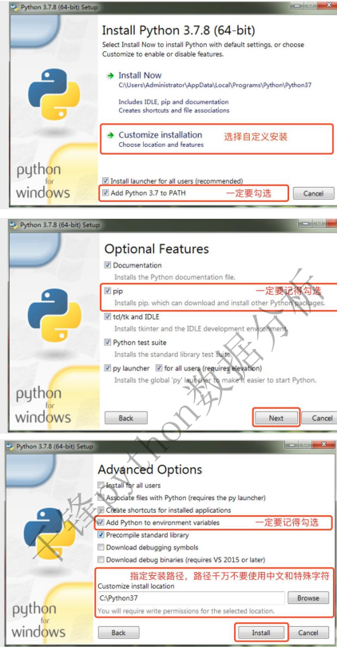

x1.简介 Python是由荷兰人吉多·范罗苏姆（Guido von Rossum）发明的一种编程语言，是目前世界上最受欢迎和拥有最多用户群体的编程语言
2.历史 (1)1989年圣诞节：Guido开始写Python语言的编译器 (2)1991年2月：第一个Python解释器诞生，它是用C语言实现的，可以调用C语言的库函数 (3)1994年1月：Python 1.0正式发布 (4)2000年10月：Python 2.0发布，Python的整个开发过程更加透明，生态圈开始慢慢形成 (5)2008年12月：Python 3.0发布，引入了诸多现代编程语言的新特性，但并不完全兼容之前的Python代码 (6)2020年1月：在Python 2和Python 3共存了11年之后，官方停止了对Python 2的更新和维护，希望用户尽快过渡到Python3 '''说明：大多数软件的版本号一般分为三段，形如A.B.C，其中A表示大版本号， 当软件整体重写升级或出现不向后兼容的改变时，才会增加A， B表示功能更新，出现新功能时增加B， C表示小的改动（例如：修复了某个Bug），只要有修改就增加C '''
3.python的优点和缺点 (1)简单明确，跟其他很多语言相比，Python更容易上手 (2)能用更少的代码做更多的事情，提升开发效率 (3)开放源代码，拥有强大的社区和生态圈 (4)能够做的事情非常多，有极强的适应性 (5)能够在Windows、macOS、Linux等各种系统上运行 #Python最主要的缺点是执行效率低，但是当我们更看重产品的开发效率而不是执行效率的时候，Python就是很好的选择 4.python的应用领域 目前Python在Web服务器应用开发、云基础设施开发、网络数据采集（爬虫）、数据分析、量化交易、机器学习、深度学习、自动化测试、自动化运维等领域都有用武之地 xxxxxxxxxx1.介绍想要开始你的Python编程之旅，首先得在计算机上安装Python环境，简单的说就是得安装运行Python程序的工具，通常也称之为Python解释器，我们强烈建议大家安装Python3的环境，很明显它是目前更好的选择2.windows下安装python3(1)可以在Python官方网站找到下载链接并下载Python3的安装程序（如果打不开，360软件管家也有）(2)双击运行下载的安装程序，会打开Python环境的安装向导。在执行安装向导的时候，记得勾选“Add Python 3.x to PATH”选项，这个选项会帮助我们将Python的解释器添加到PATH环境变量中（不理解没关系，照做就行）,具体的步骤如下图所示

xxxxxxxxxx安装完成后可以打开Windows的命令行提示符工具（或PowerShell）并输入 python --version 或python -V 来检查安装是否成功，命令行提示符可以在“运行”中输入cmd 来打开或者在“开始菜单”的附件中找到它，如果看了Python解释器对应的版本号（如：Python 3.7.8），说明你的安装已经成功了，除此之外，你还应该检查一下Python的包管理工具是否已经可用，对应的命令是pip --version注意：如果安装过程显示安装失败或执行上面的命令报错，很有可能是因为你的Windows系统缺失了一些动态链接库文件或C构建工具导致的问题，可以在微软官网下载Visual C++ Redistributable for Visual Studio 2015文件进行修复，64位的系统需要下载有x64标记的安装文件，也可以通过下面的百度云盘地址获取修复工具，运行修复工具，按照如下图所示的方式进行修复，链接: https://pan.baidu.com/s/1iNDnU5UVdDX5sKFqsiDg5Q 提取码: cjs3。3.linux系统linux系统个版本都自带python2和python3，因为其本身许多程序都对python有依赖4.macOS系统省略6.pycharm一个专业的python集成开发环境
xxxxxxxxxx1.python中不可以随便缩进，缩进起到控制作用域的功能（相当于C语言中的{}）2.python2中的print不用小括号，例子:print "hello world"3.python2默认不支持中文字符，使用中文字符要在最前面注明:#coding:utf-8
xxxxxxxxxx1.运行PyCharm--->新建项目2.指定项目路径--->创建运行项目的虚拟环境3.项目文件夹上右键--->新建--->Python文件（文件名不用写后缀，默认会拼接.py）4.写好代码后，在编辑代码的窗口点击鼠标右键--->运行--->运行代码--->显示代码的执行结果xxxxxxxxxxprint("hello world")
#注意python程序没有入口函数，最简单的程序不用导包，行尾可以不写分号xxxxxxxxxx1.介绍： 注释是编程语言的一个重要组成部分，就是用来解释自己写的程序的是什么意思
2.注释的作用: (1)多人协作开发，方便别人查阅自己的代码 (2)提高自己在后续的项目迭代中的可读性和开发效率
3.Python中有两种形式的注释： (1) 单行注释：以# 开头，可以注释掉从#开始后面一整行的内容 #被注释的内容 (2)多行注释：三个引号开头，三个引号结尾，通常用于添加多行说明性内容，引号包括单引号和双引号两种 '''被注释 的内容''' """被注释 的内容""" xxxxxxxxxx1.介绍: python中的标识符主要是指作为:变量、函数、类、模块、对象的名称 定义合法标识符的规则: (1)由数字、字母、下划线组成，不能以数字开头 (2)严格区分大小写，age和Age是两个不同的标识符 (3)不能使用关键字，通过keyword模块的keyword.kwlist属性查看关键字 2.python中常见的关键字 'False', 'None', 'True', 'and', 'as', 'assert', 'async', 'await', 'break', 'class', 'continue', 'def', 'del', 'elif', 'else', 'except', 'finally', 'for', 'from', 'global', 'if', 'import', 'in', 'is', 'lambda', 'nonlocal', 'not', 'or', 'pass', 'raise', 'return', 'try', 'while', 'with', 'yield' 3.规范 (1)见名知意，看见标识符的名字就大概知道是什么意思 (2)遵守一定的命名规范: i.小驼峰命名法:第一个单词首字母小写，以后每个单词的首字母大写，示例: userNameAndPassword ii.大驼峰命名法:每个单词的首字母大写，示例:UserName iii.下划线命名法:user_name_and_password 注意:在python里的变量、函数、模块名使用下划线连接，python的类名使用大驼峰命名法 #注意:规则不遵守，会报错，规范不遵守，不会报错，但建议遵守 xxxxxxxxxx1.变量定义： 变量存储是在内存中的值，这就意味着在创建变量时会在内存中开辟一个空间， 基于变量的数据类型，解释器会分配指定内存，并决定什么数据可以被存储在内存中， 因此，变量可以指定不同的数据类型，这些变量可以存储整数，小数或字符 2.变量赋值： Python 中的变量赋值不需要类型声明， 每个变量在内存中创建，都包括变量的标识，名称和数据这些信息 每个变量在使用前都必须赋值，变量赋值以后该变量才会被创建 等号(=)用来给变量赋值 =运算符，左边是一个变量名，=运算符右边是存储在变量中的值 3.例子: name = "成龙" print(name) age = 18 print(age) num = 4.34 print(num) # python中可以一次性给多个变量赋值 x = y = z = 12 print(x,y,z) a,b = 23,4.32 print(a,b) xxxxxxxxxx1.介绍: 简单来说,就是将程序的运行结果显示出来，在python中使用print()函数实现 ''' print(self, *args, sep=' ', end='\n', file=None) 参数分别有: 1. self:表示类名，一般指当前类 2. *arg:表示可变参数，可以多个，一般表示我们要输出的数据 3. sep:表示输出多个数据时，多个数据之间的间隔，默认值是空格 4. end:表示print()函数执行完毕后，以什么结尾，默认值是换行 5. file:表示文件名称，默认值是None(空) '''
2.例子: num = 123 num1 = 4.12 name = "吴京" love = "打篮球" print(num,end=" ") print(num1,name,sep="****") print(num1,name,love)xxxxxxxxxx0.python3中有六个标准数据类型: Number（数字） String（字符串） List（列表） Tuple（元组） Set（集合） Dictionary（字典） 1.数字(Number) Python3支持 int(整型)、float(浮点型)、bool(布尔类型) Python3中， bool是 int 的子类， True和 False可以和数字相加， True==1、False==0 会返回 True，但可以通过 is 来判断类型
例子: num = 123 #整型 num1 = 3.12 #浮点型 #布尔类型:值有两个 True(真)和False(False) 布尔类型常用于条件判断语句中. bool1 = True bool2 = False print(5 > 4) print(3 < 1) 2.字符串(String) 字符串或串(String)是由数字、字母、下划线、汉字等组成的一串字符, 一般使用单引号、双引号、或一对3个单引号进行包裹
例子: str1 = "hello" str2 = 'world' str3 = ''' 床前明月光, 疑是地上霜. 举头望明月, 低头思故乡. ''' 3.列表(List) 列表使用[ ]定义, 它支持数字，字符，字符串甚至可以包含列表（即嵌套）
例子: list1 = ['古力娜扎','吴京','李晨','陈凯歌','徐克'] print(list1) #一个list中可以存放不同的数据类型 list2 = [12,34,56,5.32,True,False,"hello"] print(list2) 4.元组(Trouple) 元组使用( )定义，它支持字符，数字，字符串甚至可以包含列表（即嵌套），类似于列表 例子: tup = (12,43,9.87,True,False,"world") print(tup)
5.字典(Dictionary) 字典用{ }标识，字典由索引(key)和它对应的值value组成:{key1:value1,key2:value2. ...... } 例子: user = {"name":"吴京","age":46,"sex":"男","weight":150} print(user)
6.集合(Set) 集合用{ }标识, { }里面只有值，没有索引 例子: set1 = {123,87.56,True,False} print(set1)xxxxxxxxxx1.介绍: 在python中,我们可以通过input()函数来获取用户输入的信息 变量 = input("提示信息") ''' 注意: i.在input函数执行完毕后，定义变量接收用户输入的内容 b.input函数接收的数据类型是字符串 c.程序会在输入函数的位置暂停，直到在终端输入数据并按下回车键后才会执行后续的代码 ''' 2.例子: password = input("亲,请输入您的密码?") print(password) xxxxxxxxxx1.其他类型--->int int(x,base=10) 参数: x:字符串或数字 base:进制数，默认十进制(表示将前面的x参数当做几进制转换为整型) 返回值: 返回整形数据，不同的被转换数据类型，运算规则不一样 (1)数字字符串可以正确转换，例如:"123" age = input("靓仔,请输入你的年龄:") #age为str型 # 在python中，字符串和整型不能直接进行数学运算，必须强制转换为int+int=int，printz再隐式将int--->str，否则会直接报错 # print(age + 1) print(int(age)+1) #str--->int--->str (2)含数字以外字符的字符串，转换会直接报错 #C语言中字母会转为ASCII码 str = "hello" # num = int(str) # 报错 # print(num)
(3)转换为其他进制 str1 = "12" print(int(str1)) # 12 print(int(str1,base=16)) # 18 表示将字符串12以16进制的形式转换为整型
(4) type()可以产看数据的类型 num1 = "32" num2 = int(num1) print(type(num1)) # <class 'str'> print(type(num2)) # <class 'int'>
2.其他类型--->str str(x) 参数: x: 其他数据类型的数据 返回值: 返回字符串 例子: num = 12 num1 = 87 print(num1 + num) # 99 print(type(num)) # <class 'int'> print(type(num1)) # <class 'int'> str1 = str(num) str2 = str(num1) print(type(str1)) # <class 'str'> print(type(str2)) # <class 'str'> print(str1 + str2) # 1287 3.其他类型--->float float(x) 参数: x:其他数据类型的数据 返回值: 返回浮点数的数据 例子: (1)数字型字符串能转换 float1 = "12.34" print(type(float1)) # <class 'str'> print(type(float(float1))) # <class 'float'> (2)含数字以外字符的字符串，转换会直接报错 float2 = "hello123" # 不能转换为浮点型 print(float(float2) ) # 报错 4.其他类型--->bool bool(x) 参数: x:给定的参数 返回值: 返回布尔类型 注意: i.在python中，数字0、空字符串、''、""、空列表[]、空元组()、空字典{}、空集合set()、空None会被转换为False. ii.在计算机中，True和False其实就是使用1和0来进行保存的. 例子: (1)显示转换 print(bool(100)) # True print(bool(3.12)) # True print(bool(0)) # False print(bool("hello")) # True print(bool('')) # False print(bool("")) # False print(bool(' ')) # True print(bool([12,34,7])) # True print(bool([])) # False print(bool((32,45,67))) # True print(bool({"name":"三哥","age":18})) # True print(bool(())) #False print(bool({})) # False print(bool(None)) # False (2)隐式转换 # 隐式类型转换一般用于条件表达式if、if-else print(3 > 2) # True print(98 < 87) # False num = 12 if num: # num在这里隐式转换为True print("num是一个数字") 5.其他类型--->list list(x): 参数: x:其他数据类型的数据 返回值: 返回列表类型的数据 例子: (1)元组转为列表 tup = (12,34,678,9) print(tup) print(type(tup)) # <class 'tuple'> print(type(list(tup))) # <class 'list'> list1 = list(tup) # print(list1) # [12, 34, 678, 9] (2)字符串转列表 str = "hello" list2 = list(str) print(list2) # ['h', 'e', 'l', 'l', 'o'] (3)一个数字转为列表，会报错 num = 12 #print(list(num)) #报错 ''' 注意: 一般情况下，是字符串、元组类型的数据转换为列表类型居多 ''' 6.其他类型--->tuple tuple(x): 参数: x: 其他数据类型的数据 返回值: 返回元组类型的数据 例子: (1)列表转为元组 # tuple() 将其他数据类型转换为元组 lis1 = [12.45,678,9,True,False,87] print(type(lis1)) #<class 'list'> print(type(tuple(lis1))) # <class 'tuple'> (2)字符串转为元组 string1 = "123" print(type(string1)) # <class 'str'> print(type(tuple(string1))) # <class 'tuple'> print(tuple(string1)) # ('1', '2', '3') '''注意: 一般情况下，是字符串、列表类型的数据转换为元组类型居多 ''' xxxxxxxxxx1.算术运算符 +加 -减 *乘 /除 %取余 **幂次 //整除 ''' 加法运算符操作字符串： str1+str2，就是拼接两个字符串 乘法运算法操作字符串: str1*3，就是str1重复3次构成新字符串 对列表也有类似效果 '''
2.赋值运算符 简单赋值运算符:= 给一个变量进行赋值 复合赋值运算符：+= -= %= /= ... ，给一个变量进行赋值，同时给变量进行相应的运算 #和C语言一样，不再赘述 3.比较运算符 > >= < <= != == #和C语言一样，不再赘述 4.逻辑运算符 and or not #就是C语言的&& || ! (1)Python逻辑运算符可以用来操作任何类型的表达式，返回值可以是任意类型 print(100 and 200) #100 print(45 and 0) #45 print(False or 12) #12 (2)Python的and、or具有短路的特性 (3)Python会返回逻辑符号左侧或右侧的操作数，不一定是bool型，只有在if、if-else、while等需要确定真假时，才能被隐式地转化为bool型 and左值为真，就输出右值，左值为假，就输出左值 or左值为真，就输出左值，左值为假，就输出右值 print(1 and "hello") #--->hello print(0 and "hello") #--->0 print("hello" or 0) #--->"hello" print(0 or False) #--->False
5.成员运算符 成员运算符包含 in、not in 主要用于字符串、列表、元组等操作 in 如果在指定的序列中找到值返回 True，否则返回 False not in 如果在指定的序列中没有找到值返回True，否则返回 False 例子: # 成员运算符: in 和 not in 主要用于判断指定元素是否在序列中，若在返回True，不在返回False. list1 = [12,34,56,89,32,True] print(34 in list1) # True print(8.87 in list1) # False print(93 not in list1) # True print(93 in list1) # False str1 = "hello" print("h" in str1) # True print("w" not in str1) # True xxxxxxxxxx0.按照执行流程划分，Python 程序也可分为 3 大结构: 顺序结构:从头到尾的顺序依次执行每一条 Python 代码，不重复执行任何代码，也不跳过任何代码 选择（分支）结构:就是让程序“拐弯”，有选择性的执行代码；换句话说，可以跳过没用的代码，只执行有用的代码 循环结构:让程序“杀个回马枪”，不断地重复执行同一段代码 1.分支结构 (1)if语句 if语法： if 表达式： 执行语句
if-else语法： if 表达式： 执行语句1 else: 执行语句2
elif语法： if 表达式1： 执行语句1 elif 表达式2： 执行语句2 elif 表达式3： 执行语句3 ..... else: 执行语句n
#python的if语句和C语言类似，区别在于python通过冒号(:)，和缩进(一个tab)代替大括号{}，划分控制区域 (2)三目运算符 a if condition else b #如果condiion为True，则返回a，否则返回b #三目运算符就是一种if-else的简写形式，写在一行之内 (3)嵌套if 语法： if 表达式1： if 表达式2： if 表达式3: 执行语句 #说明：if语句的嵌套，可以在单分支，双分支，多分支之间进行任意组合 (4)pass关键字 pass关键字在python中没有任何意义,只是单纯的用来占位使用,保证语句的完整性 age = int(input("请输入你的年龄:")) if age > 18: #print("欢迎光临本会所") pass #使用pass进行占位，没有意义，仅仅是为了保证语句的完整性，使程序不报错（因为if之后必须要有一个缩进的代码块） print("hello world") '''注意: python没有switch-case语句 '''
2.循环结构 (1)while循环 语法: 初始化的表达式 while 条件表达式: 循环体(重复执行的代码片段) 更新表达式 # 注意: 初始化的表达式只会在第一次循环的时候执行一次 (2)for循环 i.range函数 语法: range([start],end,[step]) #注意: start 和 step 是可选参数，在调用函数的时候，这两个参数可以写也可以不写 start:表示开始的数字，默认从0开始 (包含start) end:表示结束的数字 (不包含end) step:表示步长(数字之间的间隔) (默认值为1) 功能:是生成具有一定规律的序列 注意:range生成的序列，包含开始的数字(start)，数字截止到 end - 1 不包含end本身 ii.for循环 语法: for 变量名 in 序列: 循环体(循环中执行的语句块) iii.break和continue pass关键字在python中没有意义,只是单纯的用来占位,保证语句的完整性 break作用:跳出整个循环.继续执行循环外面的程序 continue作用:结束本轮循环,开启下一轮循环 #break、continue和C语言中一样 xxxxxxxxxx1.概述 由多个字母、数字、特殊字符组成的有限序列 字符串的定义：可以使用一对单引号、双引号、一对三个单引号、一对三个双引号定义字符串
2.创建字符串 # 创建字符串 str = "apple" str1 = 'orange' print(type(str),type(str1)) # \转义字符作用:让一些符号失去原有的意义 str2 = "\"吴亦凡\"" str3 = '\'都美竹\'' print(str2,str3) # 定义字符串的时候，单双引号可以互相嵌套 str4 = "凡哥,'这次车翻的有点厉害'" print(str4)
3.字符串的特殊处理 (1)字符串前加 r r"" 的作用是去除转义字符 即如果是“\n”那么表示一个反斜杠字符，一个字母n，而不是表示换行了 以r开头的字符，常用于正则表达式，对应着re模块 (2)字符串前加f 以f开头表示在字符串内支持大括号内的python 表达式 print(f'{name} done in {time.time() - t0:.2f} s') (3)字符串前加b b" " 前缀表示：后面字符串是bytes 类型。网络编程中，服务器和浏览器只认bytes 类型数据 (4)字符串前加u 例：u"我是含有中文字符组成的字符串。" 后面字符串以 Unicode 格式 进行编码，一般用在中文字符串前面，防止因为源码储存格式问题，导致再次使用时出现乱码
4.字符串的下表和切片 (1)下标:也叫索引，表示第几个数据，下标一般从0开始，可以通过下标获取指定位置的数据 str1 = "welcome" print(str1[0]) # w print(str1[3]) # c (2)切片:从字符串中复制一段指定的内容,生成一个新的字符串 str2 = "welcome to beijing" ''' 切片的语法: 字符串[start:end:step] start 表示开始下标 截取的字符串包含开始下标对应的字符串 end表示结束下标 step表示步长 ''' print(str2[0:3]) # wel 包含start 不包含end print(str2[1:] # 若只设置了start 表示从开始下标一直截取到最后 print(str2[:4]) # 若只设置了end 表示从第一个字符开始一直截取到指定结束的位置 print(str2[1:4:2]) # ec print(str2[1:4:0]) # 在切片的时候,步长不能设置为0 print(str2[::]) # 若未设置开始和结束,表示复制字符串 print(str2[::-1]) # 表示翻转字符串 print(str2[-9:-3]) #start和end若都为负数,表示从右边开始数 (3)获取长度和次数 str3 = "凡哥,'这次车翻的有点厉害'" # 获取字符串的长度 len() print(len(str3)) # count() 在整个字符串中查找子字符串出现的次数 str = "电脑卡了,ss电脑呢?" print(str.count("电脑")) # 3 # 在指定区间内查找出现的次数 print(str.count("电脑",5,30)) # 2
(4)字符串查找 # find() 查找子串在字符串中第一次出现的位置, 返回的是下标,若未找到返回-1 ss3 = "123asdfASDCXaZ8765sahbzcd6a79" print(ss3.find("a")) # 3 print(ss3.find("y")) # -1 未找到子串,返回-1 # 在指定区间内查找 print(ss3.find("a",5,20)) # 12 # rfind 查找子串在字符串中最后一次出现的位置,返回的是下标,若未找到返回-1 print(ss3.rfind("a")) # 25 print(ss3.rfind("y")) # -1 # index() 功能和find类似 在字符串中未找到的时候,直接报错 print(ss3.index("d")) # 5 # print(ss3.index("y")) # ValueError: substring not found # max()min()依据ASCII码进行的获取 print(max(ss3)) # z print(min(ss3)) # 1 (5)大小写转换 # 2.字符串大小写转换 upper() lower() # upper()将字符串中的小写字母转换为大写 str1 = "i Miss you Very Much!" print(str1.upper()) # I MISS YOU VERY MUCH! # lower() 将字符串中的大写字母转化为小写 print(str1.lower()) # i miss you very much! # swapcase 将字符串中的大写转换为小写,将小写转换为大写 print(str1.swapcase()) # I mISS YOU vERY mUCH! # title() 将英文中每个单词的首字母转换为大写 str2 = "i love you forever!" print(str2.title()) # I Love You Forever!
(6)提取 # strip() 去除字符串两边的指定字符(默认去除的是空格) ss4 = " today is a nice day " ss5 = "***today is a nice day****" print(ss4) print(ss4.strip()) print(ss5) print(ss5.strip("*")) # lstrip 只去除左边的指定字符(默认去除的是空格) # print(ss5.lstrip("*")) # rstrip 只去除右边的指定字符(默认去除的是空格) print(ss5.rstrip("*")) (7)分割和合并 # split() 以指定字符对字符串进行分割(默认是空格) ss6 = "this is a string example .......... wow!" print(ss6.split()) # 以空格进行分割 ['this', 'is', 'a', 'string', 'example ..........wow!'] print(ss6.split("i")) # splitlines() 按照行切割 ss7 = '''将进酒 君不见黄河之水天上来, 奔流到海不复回. 君不见高堂明镜悲白发, ************. ''' print(ss7) print(ss7.splitlines()) # join 以指定字符进行合并字符串 ss8 = "-" tuple1 = ("hello","every","body") print(tuple1) print(ss8.join(tuple1)) # hello-every-body (8)替换 # 替换 replace() 对字符串中的数据进行替换 ss9 = "现在的国家主席是习近平,习近平是一个伟大的任务,我们感谢习近平主席让我们有饭吃" print(ss9) print(ss9.replace("习近平","***")) # 控制替换的字符的次数 print(ss9.replace("习近平","***",2)) (9)判断 # 字符串判断 # isupper() 检测字符串中的字母是否全部大写 print("ASDqwe123".isupper()) # False print("ASD123".isupper( ) ) # True # islower() 检测字符串中的字母是否全部小写 print("ASDqwe123".islower()) # False print("qwe123".islower( ) ) # True # isdigit() 检测字符串是否只由数字组成 print("1234".isdigit()) #True print("1234asd".isdigit()) # False #istitle() 检测字符串中的首字母是否大写 print("Hello World".istitle()) # True print("hello everybody".istitle()) # False # isalpha() 检测字符串是否只由字母和文字组成 print("你好everyone".isalpha()) # True print("你好everyone123".isalpha()) # False # isalnum() (10)前缀和后缀 # 前缀和后缀 判断字符串是否以指定字符开头或者以指定字符结束 # startswith() 判断字符串是否以指定字符开头 # endwith() 判断字符串是否以指定字符结束 s1 = "HelloPython" print(s1.startswith("Hello")) # True print(s1.endswith("thon")) # True (11)编译码 # encode() 编码 # decode() 解码 s2 = "hello 千锋教育" print(s2.encode()) # b'hello \xe5\x8d\x83\xe9\x94\x8b\xe6\x95\x99\xe8\x82\xb2' print(s2.encode("utf-8")) # b'hello \xe5\x8d\x83\xe9\x94\x8b\xe6\x95\x99\xe8\x82\xb2' print(s2.encode("gbk")) # b'hello \xc7\xa7\xb7\xe6\xbd\xcc\xd3\xfd' # 解码 s3 = b'hello \xe5\x8d\x83\xe9\x94\x8b\xe6\x95\x99\xe8\x82\xb2' print(s3.decode()) # hello 千锋教育 (12)ASCII码转换 chr() 将对应的ASCII码的值转换为对应的字符 ord() 获取对应字符的ASCII的值 print(chr(68)) # D print(ord("a")) # 97 (13)格式化输出 通过%来改变后面字母或者数字的含义，%被称为占位符 ''' % 占位符 %d 表示整数 %f 表示小数 %s 表示字符串 %.3f (表示保留3位小数,保留的小数数位自己可以控制) ''' name = "畅总" sex = "型男" money = 198987932.787532 print("我的姓名是:%s"%name) print("我的大号是%s,性别是%s,我的财富是%.2f"%(name,sex,money)) # 还可以通过 f"{}{}"这种方式实现格式化输出 print(f"我的大号是:{name},性别是:{sex},我的财富是{money}") xxxxxxxxxx1.概述 变量:使用变量存储数据, 但是存在一个缺点: 一个变量一次只能存储一个数据 若要存储多个数据: 一般使用列表 列表本质上面是一个有序的集合 list1 = ["幻影","兰博基尼","迈巴赫","玛莎拉蒂","布加迪威龙","红 旗","唐","宋","元","汉","秦",123,True] print(list1) 2.创建列表 语法: 变量名 = 列表 列表名称 = [数据1,数据2 ................. ] 说明: 使用 [ ] 表示创建列表 列表中存储的数据为元素 列表中的元素从头到尾进行了编号.编号从0开始, 这个编号被称为下标 或者 索引 或者 角标 索引的取值范围: 0 ~~~~ 元素的个数-1 超过索引的范围:列表越界 例子: i.创建列表 list1 = [] 空列表 ii.带元素的列表 list2 = ["五菱宏光","哈弗H6","大狗","欧拉",True] ii.列表中的元素可以是不同的数据类型 list3 = [12,3.13,True,False,"hello","米西米西"] #注意: 将数据保存到列表的时候,不用考虑列表的大小,如果数据很大的话,底层会进行自动扩容
3.获取元素 访问方式：通过索引访问列表中的元素【有序，索引：决定了元素在内存中的位置】 list2 = ["五菱宏光","哈弗H6","大狗","欧拉",True] list2[0] 表示第一个元素 list2[-1] 表示最后一个元素 len(list2) 表示获取列表元素的个数 list2[11] 4.替换元素(修改元素的值) 语法：列表名[索引] = 值 注意：列表中存储的是其实是变量，所以可以随时修改值 代码演示： list2 = ["五菱宏光","哈弗H6","大狗","欧拉",True] # 修改列表元素 语法:列表名[索引] = 值 print(list2) list2[2] = "天狗" print(list2) 5.遍历列表 list3 = ["肠粉","佛跳墙","白切鸡","云吞"] ''' # 第一种方式: for i in list3: print(i) # 第二种方式: 通过索引的方式访问元素 for i in range(len(list3)): print(list3[i]) ''' # 第三种方式:enumrate() 同时遍历索引和元素 for index,value in enumerate(list3): print(index,value) 6.列表元素组合 合并列表: 通过 + 实现 list = [12,34,6,8,3.13] list1 = ["荔枝","龙眼","桂圆","榴莲","芒果"] print(list,list1) # 通过 + 实现列表的合并 list + list1 list2 = list + list1 print(list2) 7.列表元素重复 重复输出列表中的元素: 通过 * 实现 list = [1,2,3] list1 = list * 4 print(list 8.判断元素是否在列表中 判断指定元素是否在列表中,使用成员运算符检查 True和False in 和 not in 返回值是一个布尔类型 list1 = [12,34,4.12,"haha","lele","hehe"] print(12 in list1) # True if "haha" in list1: print("字符串在列表中") else: print("不在列表中") 9.列表截取(切片) 语法: 列表名[开始下标:结束下标] 特点: 前闭后开 包含开始下标的元素不包含结束下标的元素 list2 = [13,45,2,35,7,9] print(list2[1:6]) print(list2[:4]) # [13, 45, 2, 35] print(list2[1:]) # [45, 2, 35, 7, 9] print(list2[:]) # [13, 45, 2, 35, 7, 9] print(list2[-2:]) # [7, 9] 10.列表内置函数 # 1.添加元素 # a. append() 向列表的尾部追加元素 list1 = [ "香妃","妲己","赵飞燕","杨贵妃","东施"] print(list1) # 追加单个元素 list1.append("西施") # 追加多个元素的时候,不能直接追加,必须使用列表的方式追加,原列表变成了二维列表 list1.append(["王昭君","貂蝉","大小乔"]) print(list1) # b.extend 用于在列表末尾一次追加另一个列表中的多个元素 list1 = [ "香妃","妲己","赵飞燕","杨贵妃","东施"] list1.extend(["乾隆","商纣王","汉昭帝","唐玄宗","解博超"]) list1.extend("秦始皇") # "秦" "始" "皇" print(list1) # c.insert() 在列表中指定的索引处插入元素,后面的其他的元素依次后延 list2 = ["秦始皇","汉武帝","曹操","刘备","孙权"] list2.insert(1,"刘邦") # 若想一次性插入多个元素使用列表的形式插入 原列表会变为二维列表 list2.insert(3,["诸葛亮","马超"])
#2. 删除元素 list2 = ["秦始皇","汉武帝","曹操","刘备","孙权"] # pop() 传输的参数是下标 不传参数的时候,默认移除最后一个元素,返回的是原列表 print(list2) # list2.pop() ["秦始皇","汉武帝","曹操","刘备"] list2.pop(2) # ['秦始皇', '汉武帝', '刘备', '孙权'] print(list2) # remove() 传输的参数是指定移除的元素 list2.remove("刘备") print(list2) print(list2) list2.clear() print(list2) # [] #3.获取元素 list = [12,34,2,5.23,True,False,"hello"] # print(len(list)) # len 获取列表的长度 # 获取列表中的最大值 max() list1 = [12,3,4,32,98,14,3,78,3,34,3] # print(max(list1)) # 获取列表中的最大值 min()# print(min(list1)) # 获取指定元素的索引 index(元素名称) # print(list1.index(98)) #4.其他用法 # 列表的其他用法 list = [12,42,34,16,87] print(list) # reverse 翻转列表元素 注意:在原列表的内部进行翻转,不会生成新列表 list.reverse() print(list) # sort() 对原列表元素进行排序 默认是升序 不会生成一个新的列表 #升序 list.sort() # 降序 在sort函数中传入reverse=True 实现降序 list.sort(reverse=True) print(list) # sorted() 对列表元素进行排序,默认是升序, 排序的结果会生成一个新列表 #升序 list1 = sorted(list) #降序 传入reverse=True list1 = sorted(list,reverse=True) print(list1) list2 = ["a","hello","abe","bc","everyone"] # 按照元素的长度进行排序 list3 = sorted(list2,key=len) print(list3) 11.二维列表 一个列表的元素是一个列表 list = [12,34,6,7,"boy",True] # 一维列表 list1 = [32,14,"girl",False,[16,31,9.12,"haha"]] #二维列表 print(list1[1]) # 14 print(list1[4][2]) # 9.12 12.列表生成式 list comprehension:系统内置的用于创建list的方式 range(start,end,step):缺点是生成的列表一般情况下都是等差数列 # 最基本的列表 # 1.生成1-10之间所有的数字 list1 = list(range(1,11)) print(list1) # 需求:通过程序的方式生成列表 [1,4,9,16,25] #第一种方法:使用原始的方式生成 list2 = [] for i in range(1,6): list2.append(i ** 2) print(list2) # 第二种方法:使用列表生成式 list3 = [i**2 for i in range(1,6)] print(list3) # [1, 4, 9, 16, 25] # 使用列表生成式 生成1-10之间所有的奇数 list4 = [i for i in range(1,11) if i % 2 == 1] print(list4) # 使用列表生成式 生成1-10之间所有的奇数并且能被3整除的数字 list5 = [i for i in range(1,11) if i % 2 == 1 and i % 3 == 0] print(list5) # 列表生成式中使用双重循环 list6 = [i + j for i in "xyz" for j in "987"] print(list6) # 字典生成式:(了解) dict1 = {i:i*i for i in range(1,6)} print(dict1) # 集合生成式:(了解) set1 = {i*i for i in range(1,6)} print(set1) 4.字典
xxxxxxxxxx1.介绍 列表和元组的使用缺点：当存储的数据要动态添加、删除的时候，我们一般使用列表，但是列表有时会遇到一些麻烦 解决方案：既能存储多个数据，还能在访问元素的很方便的定位到需要的元素，采用字典 语法： {键1: 值1, 键2: 值2, 键3: 值3, ..., 键n: 值n} 说明：键值对: key-value (1)字典和列表类似，都可以用来存储多个数据 (2)在列表中查找某个元素时，是根据下标进行的；字典中找某个元素时，是根据'名字'（就是冒号:前面的那个值，例如上面代码中的'name'、'id'、'sex'） (3)字典中的每个元素都由2部分组成，键:值。例如 'name':'班长' ,'name'为键，'班长'为值 (4)键可以使用数字、布尔值、元组，字符串等不可变数据类型，但是一般习惯使用字符串，切记不能使用列表等可变数据类型 (5)每个字典里的key都是唯一的，如果出现了多个相同的key,后面的value会覆盖之前的value 习惯使用场景： (1)列表更适合保存相似数据，比如多个商品、多个姓名、多个时间 (2)字典更适合保存不同数据，比如一个商品的不同信息、一个人的不同信息 2.定义字典 # 1.定义空字典 {} dict1 = {} print(type(dict1)) # <class 'dict'> #2.定义非空字典 # 第一种定义字典的方式 dict2 = {"name":"小解","age":25,"love":"女","sex":"**"} # 最常用 print(dict2) print(type(dict2)) print(dict2["name"],dict2["love"]) # 访问字典 # 第二种定义字典的方式 dict(key=value,key1=value1,...) key表示键 value表示值 dict3 = dict(num1 = "123",num2 = "987") print(dict3) # 第三种定义字典的方式 # dict(zip([key1,key2,key3....],[value1,value2,value3................ ])) # 注意:key和value的数量不一致时,以数量少的为基准 dict4 = dict(zip(['n1','n2','n3'],[12,34,56])) dict5 = dict(zip(['n1','n2','n3'],[12,34,56,45,67,89])) print(dict4) print(dict5) # 第四种方式: dict6 = dict([("a",10),("b","98"),("c",67),("d",34)]) print(dict6) # {'a': 10, 'b': '98', 'c': 67, 'd': 34} 3.字典的操作#1.访问字典中的元素 # 第一种方式: 直接通过下标访问 dict1 = { "name":"中国医生","author":"刘伟强","person":"张涵予"} print(dict1['author']) # print(dict1['money']) # 访问字典中不存在的key时,直接报错 # 第二种方式:通过get()方法获取 print(dict1.get('name')) print(dict1.get('money')) # None 访问字典中不存在的key时,返回None print(dict1.get('money',10000000) ) # 访问字典中不存在的key时,若传递了第二个参数,第二个参数会设置为默认值#2. 获取字典的长度 len() print(len(dict1))#3.获取字典中所有的key print(dict1.keys()) # dict_keys(['name', 'author', 'person'])# 4.获取字典中所有的value print(dict1.values()) # dict_values(['中国医生', '刘伟强', '张涵予'])# 5.获取字典中的所有的key和value items() print(dict1.items()) # dict_items([('name', '中国医生'), ('author', '刘伟强'),('person', '张涵予')])# 6.遍历字典 # 第一种方式: for in for i in dict1: # 遍历字典中所有的key print(i) # 第二种方式:enumrate() 遍历字典中所有的key for k,v in enumerate(dict1): print(k,' ----- ',v) # 第三种方式: items 遍历字典中所有的key和value for k,v in dict1.items(): print(k,' ----- ',v) # 第四种方式:遍历 字典中所有的值 for v in dict1.values(): print(v)#7.合并字典 update() dict2 = {"name":"袁建鑫","money":"1999999","age":23} dict3 = {"sex":"猛男"} dict2.update(dict3) print(dict2) dict4 = { "name":"iPhone13","money":20000,"color":"土豪金"}#8.增 dict4["size"] = 6.5 print(dict4)#9.改 dict4['color'] = "骚粉" print(dict4)#10.删 # 第一种:pop() 删除指定的元素 dict4.pop("color") print(dict4) # 第二种:popitem() 随机返回并删除字典中的最后一对key和value dict4.popitem() print(dict4) # clear() 清空字典 dict4.clear() print(dict4)xxxxxxxxxx1.概述 和数学上的集合基本是一样的， 特点:不允许有重复元素，可以进行交集，并集，差集的运算 本质：无序，无重复元素的集合 2.创建集合 set(列表或者元组或者字典) # 创建空集合 set1 = set() print(set1) print(type(set1)) #<class 'set'> # 创建包含元素的集合 set2 = {12,345,633,21} set3 = {"hello","world","everyone"} print(set2,set3) print(type(set2)) # <class 'set'>
3.操作 # 获取集合的长度 len() print(len(set2) ) # 4 # 集合不能通过下标访问元素 print(set2[3]) 3.添加 set2 = {12,345,633,21} # 向集合中添加一个元素 add() set2.add(98) print(set2) # 通过update() 向集合中添加多个元素 追加的元素以列表的形式出现 set2.update([1,2,3]) print(set2)
4.删除 set2 = {12,345,633,21} # pop() 随机删除一个 set2.pop() print(set2)
# remove() 删除指定的元素,传入的参数是要删除的元素,如果删除的元素不存在,会报错 # set2.remove(22) set2.remove(2) print(set2) # discard()删除指定的元素,传入的参数是要删除的元素,如果删除的元素不存在,不会报错 set2.discard(21) # set2.discard(22) print(set2) # clear() 清空集合 set2.clear() #print(set2) 5.遍历 set2 = {12,345,633,21} for i in set2: print(i) 6.交集和并集 # 集合之间的关系 set5 = {12,34,56,23,86s} set4 = {23,45,25,12,41} print(set5 & set4) # 交集 print(set5 - set4) # 差集 print(set5 | set4) # 并集 print(set4 > set5) # set4是否包含set5 print(set4 < set5) # set5是否包含set4xxxxxxxxxx1.定义 和列表相似，本质上是一种有序的集合 元组和列表的不同之处： a.列表:[ ] 元组：( ) b.列表中的元素可以进行增加和删除操作，但是，元组中的元素不能修改【元素：一旦被初始化，将不能发生改变】2.创建元组 创建列表: 创建空列表：list1 = [ ] 创建有元素的列表：list1 = [ 元素1，元素2，...] 创建元组: 创建空元组：tuple1 = ( ) 创建有元素的元组：tuple1 = ( 元素1，元素2，...) 例子: # 1.创建空元组 tuple1 = () print(type(tuple1) ) # <class 'tuple'> # 2.创建带有元素的元组 tuple2 = (12,34,6,87) print(tuple2) print(type(tuple2)) # <class 'tuple'> # 3.元组中的元素可以是各种类型 tuple3 = (12,34,4.12,"lala",True,m) print(tuple3) # 注意:创建的元组只有一个元素时, 会在元素的后面加上一个逗号 , tuple4 = (2) print(tuple4) print(type(tuple4)) # <class 'int'> tuple5 = (3,) print(tuple5) print(type(tuple5)) #<class 'tuple'> 3.元组元素的访问 tuple1 = (14,32,35,7,87) # 1.访问元组的元素,使用下标访问,下标默认从0开始 print(tuple1[1]) # print(tuple1[5]) # tuple index out of range 索引越界 print(tuple1[-1]) # 87 访问元组的最后一个元素 下标是-1 print(tuple1[-3]) # 35 # 2. 元组的元素的值不能进行修改 # tuple1[2] = 99 # print(tuple1) # 'tuple' object does not support item assignment # 3.删除元组 del # del tuple1 print(tuple1) # name 'tuple1' is not defined 4.元组操作 # 1.合并元组 + tuple1 = (12,34,56) tuple2 = (3.12,56,"hello") print(tuple1 + tuple2) # 2.重复元组中的元素 * tuple3 = (23,45,67) print(tuple3 * 4)
# 3.判断指定元素是否在元组中 使用成员运算符 in 和 not in print(56 in tuple2) if "hello" in tuple2: print("终于找到你") else: print("你在哪里呢!")
# 4.元组的截取(切片) tuple4 = (12,3,5,7,98) print(tuple4[1:4]) # (3, 5, 7) print(tuple4[-1:]) # (98,) print(tuple4[:2]) # (12, 3)
5.元组的功能 #1.len 获取元组的长度 print(len(tuple4)) # 5 # 2.获取元组中的最大值max()和最小值min() print(max(tuple4)) # 98 print(min(tuple4)) # 3 # 3.其他数据类型转换为元组 tuple() list1 = [12,34,57,89] print(type(list1)) # <class 'list'> print(type(tuple(list1))) # <class 'tuple'> # 4.遍历元组 # 第一种方式: for in for i in tuple4: print(i) # 第二种方式: 通过下标访问 for i in range(len(tuple4)): print(tuple4[i]) # 第三种方式: enumrate() 返回索引和元素 for key,value in enumerate(tuple4): print(key,value) 6.二维元组 tuple2 = (12,34,5,6,(763,341,23),980,89) print(tuple2) print(tuple2[3]) # 6 print(tuple2[4][1]) # 二维元组的访问xxxxxxxxxx#深浅拷贝的可视化视图 http://pythontutor.com/live.html#mode=edit # 赋值: 其实就是对象的引用(别名) list = [12,34,57,9] list1 = list list[1] = 78 # print(list,list1) # 浅拷贝: 拷贝父对象,不会拷贝对象内部的子对象.浅拷贝一维列表的时候,前后两个列表是独立的. import copy a = [12,35,98,23] # 一维列表 b = a.copy() a[1] = 67 # print(a,b) # 浅拷贝在拷贝二维列表的时候,只能拷贝最外层列表,不能拷贝父对象中的子对象,当修改子对象中的值的时 候,新拷贝的对象也会发生变化 c = [14,53,25,[31,89,26],42] # 二维列表 d = c.copy() c[3][1] = 11 print(c,d) # 若要解决浅拷贝处理二维列表时的问题,需要使用深拷贝解决 e = [14,53,25,[31,89,26],42] # 二维列表 f = copy.deepcopy(e) e[3][1] = 11 print(e,f)xxxxxxxxxx1.函数的作用 问题: 代码重复 后期维护成本太高 代码可读性不高 解决问题：函数 在一个完整的项目中，某些功能会被反复使用，那么将这部分功能对应的代码提取出来，当需要使用功能 的时候直接使用 本质：对一些特殊功能的封装 优点： a.简化代码结构，提高应用的效率 b.提高代码复用性 c.提高代码的可读性和可维护性 建议：但凡涉及到功能，都尽量使用函数实现 2.定义函数 语法: def 函数名(参数1，参数2，参数3.....): 函数体 返回值(可以有也可以没有,根据具体的场景) 说明： a.函数由两部分组成：声明部分和实现部分b.def,关键字，是define的缩写，表示定义的意思 c.函数名：类似于变量名，遵循标识符的命名规则，尽量做到见名知意 d.（）：表示的参数列表的开始和结束 e.参数1，参数2，参数3......：参数列表【形式参数，简称为形参】，其实本质上就是一个变量名，参数列表可以为空 f.函数体：封装的功能的代码 g.返回值：一般用于结束函数，可有可无，如果有返回值，则表示将相关的信息携带出去，携带给调用者，如果没有返回值，则相当于返回None h. 函数
例子: #test() #name 'test' is not defined # 函数调用不能在函数定义的上面 def test(): print("郑州平安!") 3.函数的调用 test() # 函数调用 test() test() ''' 函数调用的格式: 函数名() 1.函数是条狗,哪里需要哪里吼. 函数定义以后不会自动执行. 若想执行函数中的函数体,需要调用函数. 2.函数必须先定义,后调用.调用函数必须在定义函数的下边. 3.函数可以多次调用. 4.在同一个文件中,出现了重名的函数,后面的函数会把前面的函数覆盖.调用的时候执行后面的函数. '''
4.函数的分类 (1)按照函数是否是自己定义分为: 内置函数: 比如:print() 好的,可以直接使用的 int() str() upper() lower() python语言内部已经定义 自定义函数:根据自己的需求定义的函数 (2)根据函数中有没有参数分为: 有参数的函数: 在定义函数时传入的参数叫做形式参数(形参) 在调用函数时传入的参数叫做实际参 数(实参) 没有参数的函数: (3)根据定义的函数有没有函数名分为: 有名字的函数: def 函数名(): 函数体 匿名函数: 通过 lambda 定义 (4)根据函数中是否有返回值分为: 有返回值的函数: 使用return 返回数据 没有返回值的函数: 5.无参的函数 def test(): print("年少不知软饭香!")
6.有参的函数 def my_sum(a,b): # a,b就是形参 print(a + b) my_sum(12,23) # 12,23就是实参
7.没有返回值的函数 def say(): print("我是没有返回值的函数") say()
9.有返回值的函数: 通过return关键字返回数据 def demo(): return "我是有返回值的函数" str = demo() print(str) ''' 1. return 后面可以返回一个或者多个数据,返回多个数据,以元组的形式展示出来 2. return 下面的代码不会执行 ''' def demo1(): print("哈你妹!") return 12,34,578 print("haha") # 不会执行 tuple1 = demo1() print(tuple1) # (12, 34, 578) # 函数中没有return或者return后面没有数据返回,则默认返回的是None def demo2(): return print(demo2()) # None 注意: i.有返回值的函数,使用return关键字将数据返回,若想使用返回的数据,需要在调用函数的位置定义一 个变量接收返回的数据. ii. return 返回的数据可以是一个或者多个,返回的多个数据是以元组的形式展示. iii. return关键词下面的代码不会执行. iv.在函数中若不写return 或 者 return后面没有返回具体的数据,则返回的是None 10.函数的嵌套 函数之间可以进行相互嵌套 def test(): test1() print(11111) def test1(): test2() print(22222) def test2(): test3() print(333333) def test3(): print(44444) test() 11.函数的参数 参数列表：如果函数所实现的功能涉及到未知项参与运算，此时就可以将未知项设置为参数 格式：参数1,参数2..... 分类： 形式参数：在函数的声明部分，本质就是一个变量，用于接收实际参数的值 【形参】 实际参数：在函数调用部分，实际参与运算的值，用于给形式参数赋值 【实参】 #传参：实际参数给形式参数赋值的过程，形式参数 = 实际参数 例子: def get_max(num1,num2): # num1,num2是形参 if num1 > num2: return num1 else: return num2 max_value = get_max(12,345) # 12,345是实参 print(max_value)
形参和实参之间的关系: (1)一般请况下,形参的数量和实参的数量保持一致 (2)在函数中,形参的名字和实参的名字一样不会产生任何影响(本质上两者开辟的是不同的内存) 12.参数的类型 (1)必需参数 调用函数的时候必须以正确的顺序传参，传参的时候参数的数量和形参必须保持一致 def student(name,age): print("我的姓名是%s,年龄是%d"%(name,age)) student("永利",21) # student(21,"永利") # %d format: a number is required,not str (2)关键字参数 使用关键字参数允许函数调用的时候实参的顺序和形参的顺序可以不一致，可以使用关键字进行自动的匹配 defstudent(name,age): print("我的姓名是%s,年龄是%d"%(name,age)) student(age= 22,name= "曼莉") (3)默认参数 (默认参数是在函数定义的时候,直接给形参赋的值) 调用函数的时候，如果没有传递参数，则会使用默认参数,如果传输了参数,则使用传递的参数 def get_sum(num1,num2 = 12): print(num1+num2) get_sum(23) get_sum(23,87) # 注意: 如果函数中有多个形参,给该函数设置默认参数时,一般把这个默认参数放在形参列表的最后面 (5)不定长参数(可变参数) 可以处理比当初声明时候更多的参数 *(元组) **(字典) *args: 用来接收多个位置参数 argments 得到的形式是 元组 **kwargs: 用来接收多个关键字参数 keyword arguments 得到的形式是字典 # 不定长参数: *args **kwargs def fn(*args): print(args) fn(34,533,4,3) # 注意: ''' 在自定义函数时,若函数中有多个参数,某一个参数是不定长参数,一般把不定长参数放在参数列表的最 后面. ''' def fn1(name,*args): print(name,args) fn1("赵杰",12,345,6,"hehe",True) # **kwargs 接收的是关键字参数,格式是 key=value这种形式 def fn2(**kwargs): print(kwargs) fn2(x = 10,y = 12,z = 88)
13.匿名函数 不再使用def这种的形式定义函数，使用lambda来创建匿名函数 特点： i.lambda只是一个表达式，比普通函数简单 ii.lambda一般情况下只会书写一行，包含参数，实现体，返回值 语法:lambda 参数列表 ： 实现部分 # 匿名函数: lambda def fn(n): return n**2 print(fn(3)) # 匿名函数 f1 = lambda n: n**2 print(f1(3)) #匿名函数 f2 = lambda x,y:x*y print(f2(12,3)) #有名字的函数的写法 def ji(x,y): return x*y
14.回调函数 def fn(a,b): print(a + b) fn(12,34) # 46 test = fn # 将函数fn赋值给一个变量test, 那这个变量test能够实现和函数fn一样的功能 print(type(test),type(fn)) # <class 'function'> <class 'function'> test(12,34) # 46 # 函数名: fn既是函数的名称,同时也指向了该函数的对象(变量) # 函数调用的格式: 函数名()====>变量名() # 回调函数: 把一个函数(a)作为一个参数传递到另外一个函数(b)中去,那么函数a就叫做回调函数. def add(x,y): print(x+y) def cha(x,y): print(x-y) def ji(x,y): print(x*y) def shang(x,y): print(x/y) add(56,23) cha(78,21) # 封装一个函数,实现加减乘除运算. def demo(x,y,func): func(x,y) demo(56,23,add) # 此时add函数就是一个回调函数 demo(78,12,cha) 15.闭包和装饰器 如果在一个函数的内部定义另外一个函数，外部的函数叫做外函数，内部的函数叫做内函数 如果在一个外部函数中定义一个内部函数，并且外部函数的返回值是内部函数，就构成了一个闭 包，则这个内部函数就被称为闭包【closure】 实现函数闭包的条件: i.必须是函数嵌套函数 i.内部函数必须引用一个定义在闭合范围内的外部函数的变量,----- 内部函数引用外部变量 i,外部函数必须返回内部的函数 (1)闭包: 如果在一个外部函数中定义一个内部函数，并且外部函数的返回值是内部函数，就构成了一个闭包，则这个内部函数就被称为闭包【closure】 # 最简单的闭包 # 外部函数def outer(): # 内部函数 def inner(): print("lala") return inner # 将内部函数返回 fn = outer() # fn =====> inner函数 fn() # 相当于调用了inner函数 输出 lala # 内部函数使用外部函数的变量 def outer1(b): a = 10 def inner1(): # 内部函数可以使用外部函数的变量 print(a + b) return inner1 fun1 = outer1(12) fun1() ''' 注意: 1.当闭包执行完毕后，仍然能够保存住当前的运行环境 2.闭包可以根据外部作用域的局部变量得到不同的效果，类似于配置功能，类似于我们可以通过修改外部 变量,闭包根据变量的改变实现不同的功能. 应用场景: 装饰器 ''' (2)装饰器 def test(): print("你好啊!") test() # 需求: 给上面的函数test增加一个功能, 输出 我很好 # 第一种方式: 修改了原来的函数 def test(): print("你好啊!") print("我很好") test() # 第二种方式: 定义一个新函数,在新函数中调用原函数，然后追加功能 def test1(): test() print("我很好") test1() 在代码运行期间，可以动态增加函数功能的方式，被称为装饰器【Decorator】 通过闭包函数实现 也就是说，在不修改原函数的基础上，给原函数增加功能 好处：在团队开发中，如果两个或者两个以上的程序员会用到相同的功能，但是功能又有细微的 差别，采用装饰器：相互不影响，代码简化 (3)简单装饰器 #先定义原函数，在定义装饰器 #原函数 def test(): print("你好啊!") # 需求: 给上面的函数test增加一个功能, 输出 我很好 # 第三种方式: 通过装饰器的方式给函数追加功能 装饰器使用闭包实现
#a.书写闭包函数 此处的outer函数就是装饰器函数 def outer(fn) : #b. fn表示形参, 实际调用的时候传递的是原函数的名字 def inner(): fn( ) #c.调用原函数 #d. 给原函数添加功能, 注意:添加的功能可以写在原函数的上面也可以写在原函数的下面 print("我很好") return inner print("添加装饰器之前:",test, name ) #<function test at 0x00000223ED1DC268> test = outer(test) print("添加装饰器之后:",test, name ) #<function outer.<locals>.inner at0x00000223ED793510> test() #被装饰过的test函数
总结: 1.在装饰器中,给原函数添加的功能,可以写在原函数的上面,也可以写在原函数的下面 2. outer 函数就是我们的装饰器函数 (4)系统的简写 #先定义装饰器，在定义原函数 #a.书写闭包函数 此处的outer函数就是装饰器函数 def outer(fn) : #b. fn表示形参, 实际调用的时候传递的是原函数的名字 def inner(): fn( ) #c.调用原函数 #d. 给原函数添加功能, 注意:添加的功能可以写在原函数的上面也可以写在原函数的下面 print("我很好") return inner # test = outer(test) # 装饰器的简写方式 @ + 装饰器名称 # 等价于 =====>test = outer(test) def test(): print("你好啊!") test() ''' 注意: 1.在使用装饰器的简写方式的时候，原函数必须在装饰器函数的下面 2.outer就是装饰器函数. @outer等价于 test = outer(test) ''' (5)不定长参数的装饰器(通用装饰器) # 同一个装饰器装饰多个函数 def jisuan(fn): def inner(*args): print("数学运算的结果是:",end=" ") fn(*args) return inner def add(a,b): print(a+b) add(12,34) def cha(a,b,c): print(a-b-c) cha(100,23,26) (6)带返回值的装饰器 def outer(fn): def inner(): print("我的爱好是:",end = " ") return fn() # fn() ===> swim() ===> "i like swimming(这句话返回到了第4行) return inner def swim(): return "i like swimming!" love = swim() print(love)
(7)多个装饰器作用同一个函数 # 多个装饰器作用域一个函数 def outer1(fn): def inner(): print("~~~~~~~1111") fn() return inner def outer2(fn):s def inner(): print("~~~~~~~2222") fn() return inner # 原函数 def show(): print("今晚我的好基友从广州过来了,好开心! .......") show() ''' 当多个装饰器修饰一个函数的时候,装饰器从上往下依次执行. 并且原函数只执行一次. '''
xxxxxxxxxx1.出现的原因 变量的作用域：变量可以被使用【被访问】的范围 程序中的变量并不是在任意的语句中都可以被访问，访问权限取决于这个变量被定义在哪个位置 在python中 分支语句 if..else if.. 和 循环for 等 是不存在变量作用域问题的 if 5 > 4: a = 11 print(a) for i in range(10): b = 32 print(b) # 在 分支结构中if.. if..esle 和 循环中for in 不存在作用域的问题.在他们的外面可以直接 访问里面定义的变量. def fn(): c = 99 # print(c) # name 'c' is not defined 2.作用范围划分 局部作用域：L【Local】 函数作用域：E【Enclosing】 将变量定义在闭包外的函数中全 局作用域：G【Global】 內建作用域：B【Built-in】 例子: def fn(): c = 99 # print(c) # name 'c' is not defined 1.函数内部定义的变量在函数外部不能访问. # 全局作用域: num1 = 12 # 全局作用域,在函数内部和外部可以直接访问 def test(): num2 = 87 # 函数作用域 print(num1) # print(num3) # name 'num3' is not defined def inner(): num3 = 55 # 局部作用域 # 在内部函数中,可以访问全局作用域\函数作用域\局部作用域的变量 print(num1,num2,num3) return inner test() print(num1) czl # print(num2) fn = test() fn() n = int("28") # builins 内置函数在调用的时候的作用域,这是python解释器自己定义的. 总结: 1. 在 分支结构中if.. if..esle 和 循环中for in 不存在作用域的问题.在他们的外面可以直接访问里面定义的变量 2.作用域主要体现在函数中, 函数内部定义的变量在函数外部不能访问 3.函数内部可以访问函数外部的变量 3.全局变量和局部变量【掌握】 全局变量：将变量定义在函数的外面 局部变量：将变量定义在函数的内部 注意：局部变量只能在其被声明的当前函数中使用，而全局变量可以在整个程序中使用 4.global和nonlocal关键字的使用【掌握】 使用场景：当内部作用域【局部作用域，函数作用域】想要修改全局变量的作用域的时候 5.global num = 11 def test(): num = 78 print(num) test() # 78 print(num) # 11 # 若想在函数的内部,对全局变量进行修改,需要使用global关键字 num1 = 11 def test1(): # 通过global关键字将函数内部声明变量变为了全局变量 global num1 num1 = 75 print(num1) test1() # 75 print(num1) # 75 6.nonlocal # nolocal 关键字主要用于闭包函数中 # nolocal关键字用于闭包函数中 x = 15 # 全局变量 def outer(): x = 19 def inner(): # x = 23 # global x # 使用的是 x = 15 nonlocal x # 这时候使用的变量是 x = 19 x += 1 print("inner:",x) return inner # 闭包会保存住当前的运行环境 test = outer() test() # 20 test() # 21 test() # 22 num = 11 def demo(): print(num) demo() # 11 demo() # 11 demo() # 11 7.filter和map函数 filter是一个内置类 主要做数据的筛选.第一个参数是一个函数,第二个参数是一个可迭代对象 ages = [12,34,5,21,44,98] # 将ages列表中数值大于30的数字筛选出来 # 返回值是一个filter类型的对象 list1 = filter(lambda ele:ele > 30,ages) print(list1) map() 主要是用于数据的处理 第一个参数是一个函数 第二个参数是一个可迭代对象 # 返回值:是一个map类型的对象 list2 = map(lambda ele:ele + 3,list1) print(lsit2)
xxxxxxxxxx1.概述 为了解决维护问题，一般情况下，在一个完整的项目中，会将特定的功能分组，分别放到不同的 文件中，在使用的过程中，可以单独维护，各个不同的文件之间互不影响，每个.py文件就被称为 一个模块，通过结合包的使用来组织文件 封装思路: 函数 => 类 => 模块 => 包 => 项目 优点： a.提高了代码的可维护性 b.提高了代码的复用性【当一个模块被完成之后，可以在多个文件中使用】 c. 引用其他的模块【第三方模块】 d.避免函数名和变量的命名冲突 # 模块 ''' 模块就是一个python文件 模块分类: 1.内置模块: python 本身提供的模块 比如:os random time 2.自定义模块: 我们自己根据项目的需求,自己书写的模块 3.第三方模块: 别人写好的具有特殊功能的模块 a.在使用第三方模块的时候,需要先安装 比如:numpy pandas flask b.导入和使用 ''' # 模块导入的方式: # 第一种: import 模块名 # 第二种: from 模块名 import 模块名里面的方法 # 示例: # 导入内置模块r import os from random import randint 2.自定义import模块 # 导入自定义模块 # import module1 # 使用自定义模块的变量 # print(module1.name) # print(module1.age) # print(module1.love) 3.自定义from-import模块 from module1 import * 4.自定义from-import*模块 # * 表示通配符 模糊导入,使用*号后,可以直接使用模块中的所有的内容,比如变量,方法等(不推荐使用) ''' from module1 import * print(name) print(age) print(love) ''' # 精确导入 (推荐) from module1 import name,age print(name) print(age) # 给模块起别名 as import random as r # print(r.randint(1,10)) 总结：在python中，每个py文件其实都是一个模块，如果跨模块调用函数，则采用导入的方式 将不同的功能进行划分，调用函数的时候相对比较方便的 5.第三方模块第三方模块: 别人写好的具有特殊功能的模块 a.在使用第三方模块的时候,需要先安装 比如:numpy pandas flask b.导入和使用 更新pip 版本 python -m pip install --upgrade pip 第一种操作第三方模块的方式: pip 专门用来安装和卸载python相关扩展的工具 pip -V 查看当前pip的版本号 pip list 查看当前项目安装的所有的扩展 pip install 扩展名(包名) 安装指定的包 一般我们在安装包的时候,会使用国内的镜像 豆瓣的镜像源 s 安装flask框架 pip install flask -i https://pypi.doubanio.com/simple/ 练习: 尝试去安装 numpy pandas flask requests lxml pip uninstall 扩展名(包名) pip uninstall flask pip show 扩展名(包名) 第二种操作第三方模块的方式: 通过pycharm编辑器: 文件->设置->项目->python解释器: + 表示安装包 - 表示卸载包 x 6.time时间模块import time # 获取时间戳 从1970年1月1日0时0分0秒到现在经过的秒数 time.time() # 延迟程序多长时间执行一次 time.sleep()
7.datetime日期模块 是对time模块的封装，比time模块更加全面 import datetime # 获取当前的日期对象 date = datetime.datetime.now() print(date) # 设置日期对象 date1 = datetime.datetime(year=2022,month=11,day=10,hour=10,minute=23,second=11)
print(date1) print(type(date1)) # <class 'datetime.datetime'> print(date1.year,date1.month,date1.day) # 年 月 日 print(date1.hour,date1.minute,date1.second) # 时 分秒 print(date1.date()) # 2022-11-10 print(date1.time()) # 10:23:11 # 将datetime.datetime类型转换为字符串 # strftime() 将日期对象转换为字符串 print(type(date1.strftime("%Y-%m-%d %H:%M:%S"))) # <class 'str'> print(date1.strftime("%Y{}%m{}%d{}").format("年","月","日")) #2022年11月10日 # strptime() 将字符串转换为日期对象 str1 = "2021-07-27 10:40:21" print(type(datetime.datetime.strptime(str1,'%Y-%m-%d %H:%M:%S'))) # <class 'datetime.datetime'> # timestamp() 日期对象转换为时间戳da daimestamp()) # 1668046991.0 # fromtimestamp() 时间戳转换为日期对象 print(datetime.datetime.fromtimestamp(1668046991.0)) # 2022-11-10 10:23:11 # 时间差 d1 = datetime.datetime(2022,1,13) d2 = datetime.datetime(2021,10,1) print(d1 - d2) print(d2 - d1) # timedelta 代表两个日期之间的时间差 dt = datetime.timedelta(days=5,hours=8) print(d1 + dt) # 2022-01-18 08:00:00 print(d1 - dt) # 2022-01-07 16:00:00 ''' # %y 两位数的年份表示（00-99） # %Y 四位数的年份表示（000-9999） # %m 月份（01-12） # %d 月内中的一天（0-31） # %H 24小时制小时数（0-23） # %I 12小时制小时数（01-12） # %M 分钟数（00-59） # %S 秒（00-59） # %a 本地简化星期名称 # %A 本地完整星期名称 # %b 本地简化的月份名称 # %B 本地完整的月份名称 # %c 本地相应的日期表示和时间表示 # %j 年内的一天（001-366） # %p 本地A.M.或P.M.的等价符 # %U 一年中的星期数（00-53）星期天为星期的开始 # %w 星期（0-6），星期天为星期的开始 # %W 一年中的星期数（00-53）星期一为星期的开始 # %x 本地相应的日期表示 # %X 本地相应的时间表示 # %% %号本身 '''
8.os模块 用于获取系统的功能，主要用于操作文件或者文件夹 import os # listdir 查看指定目录下面所有的文件夹和文件 # r"" 将字符串中的特殊字符进行转义 print(os.listdir(r"C:\Users\chenbingjie\Desktop\python2105\day11")) # ['test.py', '代码', '作业', '昨日作业', '笔记', '视频'] # 当前目录 . # 上级目录 .. # curdir 表示当前目录 print(os.curdir) # . # getcwd() 获取当前路径 print(os.getcwd()) # C:\Users\chenbingjie\Desktop\python2105\day11\代码 # mkdir() 创建文件夹 (不能创建已经存在的文件夹) # os.mkdir("测试") # makedirs() 创建多层文件夹 # os.makedirs("a/b/c") # rmdir() 删除文件夹 (只能删除空文件夹) # os.rmdir("demo") # rename() 重命名文件夹或者重命名文件 # os.rename("a","a11") # ./表示当前目录 ../表示上级目录 # os.rename("../test.py","../demo.py") # remove() 删除文件 # os.remove("demo.py") # os.path.join() 拼接路径 print(os.path.join(r"C:\Users\chenbingjie\Desktop\python2105\day11\代 码","func.py")) # os.path.split() 拆分路径 path = r"C:\Users\chenbingjie\Desktop\python2105\day11\代码\1栈和队列.py" print(os.path.split(path)) # os.path.splitext() 拆分文件和扩展名 print(os.path.splitext(path)) # os.path.abspath 获取绝对路径 print(os.path.abspath("func.py")) # os.path.getsize() 获取文件大小 print(os.path.getsize("func.py")) # os.path.isfile() 判断是否是文件,若是文件返回True 若不是文件 返回False print(os.path.isfile("func.py")) # True # os.path.isdir() 判断是否是文件夹, 若是文件夹 返回True 若不是文件夹 返回False print(os.path.isdir("a11")) # True # os.path.exists() 判断文件或者文件夹是否存在 若存在返回True 若不存在 返回False print(os.path.exists("demo.py")) #False # os.path.dirname 获取路径的文件夹部分 print(os.path.dirname(path)) # os.path.basename 获取路径的文件名部分 print(os.path.basename(path)) 重点掌握: 1.os.listdir() 2.os.mkdir() 3.os.makedirs() 4.os.rmdir() 5. os.remove() 6. os.rename() 获取指定路径下的文件夹和文件 创建目录(目录存在,不能创建) 创建多层目录 删除目录 删除文件 重命名文件或者重命名文件夹 (是一个列表) 7. os.path.join() 拼接路径 8. os.path.split() 拆分路径 9.os.path.splitext() 拆分文件名和扩展名 10.os.path.isfile() 判断是否是文件 11.os.path.isdir() 判断是否是目录 12.os.path.exists() 判断文件或者文件夹是否存在 13.os.path.getsize() 获取文件大小
9.递归遍历目录 # 需求: 查找当前目录下面的所有的 .py文件和 .txt文件 # 提示: listdir() endwith() path = r"C:\Users\chenbingjie\Desktop\python2105\day11\代码" import os def get_file(path): # 判断路径是否存在 if not os.path.exists(path): print("路径不存在") return file_list = os.listdir(path) # print(file_list) for file in file_list: if file.endswith(".py") or file.endswith(".txt"): print(file) get_file(path) import os # 需求: 使用递归的方式遍历newdir文件夹下面的所有文件和文件夹 path = r"C:\Users\chenbingjie\Desktop\python2105\day11\代码\newdir" def search_dir(path): # 判断路径是否合法 if not os.path.exists(path): print("路径不存在") return file_list = os.listdir(path) # ['dir1', 'dir2', 'os.py'] for file in file_list: # dir1 = "C:\Users\chenbingjie\Desktop\python2105\day11\代码\newdir\dir1" # 获取文件或者文件夹的绝对路径 file_path = os.path.join(path,file) # print(file_path) # 判断file_path是否是文件,若是文件直接输出,若是文件夹通过递归方式继续遍历 if os.path.isfile(file_path): print("---",file,"是文件") # 否则是文件夹 else: print(file,"是文件夹") # 递归 search_dir(file_path) search_dir(path) xxxxxxxxxx0.概念 python中的面向对象的学习主要是类和对象 类：多个具有特殊功能的个体的集合，例如: 人类、狗、猫 对象：在一个类中，一个具有特殊功能的个体，能够帮忙解决某件特定的事情，也被称为实例【instance】 两者之间的关系：类用于描述某一类对象的共同特征，而对象是类的具体的存在 思考问题：先有类还是先有对象？ 1.类的定义 语法： class 类名( ): 类体
说明: a.Python中使用class关键字定义类 b.类名只要是一个合法的标识符即可，但是要求：遵循大驼峰命名法则【首单词的首字母大写，不同单词之间首字母大写】 c.通过缩进区分类体 d.类体一般包含两部分内容：属性和方法(属性就是描述一些静态信息的，比如人的姓名/年龄/性别等等, 方法:一般用函数表示，用来实现具体的功能) 例子: class Dog(): # 类属性 name = "局长" sex = "公"
# 类方法 def eat(self): print(self.name,"吃肉!") def say(self): print("我是吼的方法") 2.类中的方法和变量的定义 类中的方法和变量是为了描述事物的行为和特征 类中定义的方法被称为成员方法 类中定义的变量被称为成员变量，也被称为属性 [os.name] 成员变量：类具有的特征 成员方法：类具有的行为 类存在的意义：拥有相同特征和行为的对象可以抽取出来一个类，类的存在是为了创建一个具体的对象 例子: class Dog(): # 类属性 name = "局长" sex = "公" # 类方法 def eat(self): print(self.name,"吃肉!") def say(self): print("我是吼的方法") 3.创建对象 创建对象【实例化对象】 已知类，通过类创建对象 对象的创建过程被对象的实例化过程 语法：变量名 = 值 对象名 = 类名() 例子: # 定义Dog类 class Dog(): # 类属性 name = "局长" sex = "公" # 类方法 def eat(self): print(self.name, "吃肉!") def say(self): print("我是吼的方法") # 通过Dog类创建对象 labuladuo = Dog() #通过对象访问方法 labuladuo.eat() labuladuo.say() # 通过对象访问属性 print(labuladuo.name) print(labuladuo.sex) 总结: 访问变量采用：对象名.属性名 访问方法采用：对象名.方法名(参数列表) 4.构造函数 采用上面的方式创建对象【直接给成员变量赋值】，很多的类一般倾向于创建成有初始状态的__init__:构造函数【作用：创建对象，给对象的成员变量赋初始值】 构造函数：构造器 调用的时机：当一个对象被创建的时候，第一个被自动调用的函数per = Person() 语法： def __init__(self,args1,args2........) 函数体 说明： a.之前的写法中并没有显式的定义 init 函数，说明系统默认提供了一个无参的构造函数 b.args1,args2 ..... 一般设置的形参列表和成员变量有关 例子: class GirlFriend(): ''' 类属性:(不推荐这么写) name = "王凡老表" age = 22 ''' # 构造函数 参数是对象相关的属性 def __init__(self,name,age): # 对象属性 self.name = name self.age = age print("构造函数的触发时机是:当创建对象的时候自动触发") # 对象方法 def say(self): print(self.name,"喊大源,来啊来啊!") def sing(self): print("唱歌给大源听,喝了吧!") # 当创建对象的时候,会自动调用__init__() wangfanlaobiao = GirlFriend("王小妹",22) wangfanlaobiao.say() 5.析构函数 与构造函数正好相反，当对象被销毁的时候自动调用的函数，被称为析构函数__del__ : 删除变量： del 变量名，此时可以触发析构函数的调用 使用情景：清理工作，比如关闭数据库，关闭文件等 例子: class GirlFriend(): ''' 类属性:(不推荐这么写) name = "王凡老表" age = 22 ''' # 对象方法 def sing(self): print("唱歌给大源听,喝了吧!") # 析构函数:触发时机是当对象被删除时,会被自动调用,释放内存 def __del__(self): print("脚本运行结束,释放内存") # 当创建对象的时候,会自动调用 __init__() wangfanlaobiao = GirlFriend() wangfanlaobiao.sing() print("我是最后执行的一句代码了!") ''' 析构函数的应用场景: 关闭数据库 保存文件 内存回收的方式: 1.当对象在某个作用域中调用完毕,在跳出其作用域的同时析构函数会被调用一次,这样可以用来释放内存空 间. 2.当使用del删除对象的时候,也会调用该对象的析构函数,相当于手动释放内存 ''' 6.封装的概念 广义的封装：函数和类的定义本身，就是封装的体现 狭义的封装：一个类的某些属性，在使用的过程 中，不希望被外界直接访问，而是把这个属性给作 为私有的【只有当前类持有】，然后暴露给外界一个访问的方法即可【间接访问属性】 封装的本质：就是属性私有化的过程 封装的好处：提高了数据的安全性，提高了数据的复用性 7.属性私有化和方法私有化 如果想让成员变量不被外界直接访问，则可以在属性名称的前面添加两个下划线 ,成员变量则被 称为私有成员变量 私有属性的特点：只能在类的内部直接被访问，在外界不能直接访问 例子: class Girl(): def __ini__(self,name,sex,height): self.name = name self.sex = sex self.height = height self.__age = 18 # 比如女孩的年龄是秘密，在外面不能轻易的访问,需要把年龄设置为私有属性
def say(self): print("帅哥,帮个忙呗!") # 在类的内部可以访问私有属性 def sayAge(self,boyFriend): if boyFriend == "大源": print(f"{self.name}偷偷的告诉{boyFriend}说:老娘今年88了!") else: print("女孩的年龄是秘密,不知道吗?上来就问,活该你单身,傻狗!") # 私有方法 # 接吻 def __kiss(self): print("一吻定终身!")
# 类中可以访问私有方法 def love(self,relationship): if relationship == "情侣关系": self. kiss() else: print("不能随便kiss,小心中毒!")
xiaohong = Girl("小红","美女",165) print(xiaohong.name) print(xiaohong.sex) print(xiaohong.height) # print(xiaohong.age) # 将age设置为私有属性后,外部不能直接访问 xiaohong.say() xiaohong.sayAge("大源") xiaohong.love("情侣关系") ''' 私有属性: 1.写法:在属性的前面加两个下划线 age 2.用法:只能在类的内部访问,不能在类的外部访问 可以在类的内部设置一个外部访问的接口(这个接口 一般会做各种条件判断,满足后才能访问),让外部获取私有属性的值 私有方法: 1.写法:在方法的前面加两个下划线 kiss() 2.用法:只能在类的内部访问,不能在类的外部访问. 私有方法一般是用来在类的内部实现某些功能 的,对于外部来说没有实质的意义.这种方法一般定义为私有方法. ''' 8.get函数和set函数 get函数和set函数并不是系统的函数，而是自定义的，为了和封装的概念相吻合，起名为getXxx 和setXxx get函数：获取值 set函数：赋值【传值】 例子: #上面的访问和设置私有属性的命名规则不推荐. # 第一种访问和设置 私有属性的方式 get和set函数 class Girl(): def init (self,name,age): self.name = name self.__age = age
# 访问私有属性 命名规则: get + 私有属性名(属性名单词首字母大写) def getAge(self): return self.__age
# 设置私有属性 命名规则:set + 私有属性名(属性名单词首字母大写) def setAge(self,age): self.__age = age lan = Girl("小兰",21) print(lan.name) # print(lan. age) # 访问私有属性 age = lan.getAge() print(age) # 设置私有属性 lan.setAge(18) print(lan.getAge())
9..@property装饰器 装饰器的作用：可以给函数动态添加功能，对于类的成员方法，装饰器一样起作用 Python内置的@property装饰器的作用:将一个函数变成属性使用 .settter,相当于set函数的作用 作用：使用在类中的成员函数中，可以简化代码，同时可以保证对参数做校验 例子: # 第一种访问和设置 私有属性的方式 get和set函数 class Girl(): def __init__ (self,name,age): self.name = name self.__age = age ''' # 访问私有属性 命名规则: get + 私有属性名(属性名单词首字母大写) def getAge(self): return self. age # 设置私有属性 命名规则:set + 私有属性名(属性名单词首字母大写) def setAge(self,age): self. age = age ''' #通过装饰器@property 获取私有属性age 相当于getAge() def age(self): return self.__age
#通过装饰器设置私有属性 .setter def age(self,age): self.__age = age
lan = Girl("小兰",21) print(lan.name) @ + 私有属性名 + setter 相当于 setAge() print(lan.age) # 通过装饰器修访问私有属性,访问格式: 对象名.私有属性名 lan.age = 19 # 通过装饰器设置私有属性,格式: 对象名.私有属性名 = 值 print(lan.age) 10.类方法和静态方法 类方法：使用@classmethod装饰器修饰的方法，被称为类方法，可以通过类名调用，也可以通 过对象调用，但是一般情况下使用类名调用 静态方法：使用@staticmethod装饰器修饰的方法，被称为静态方法，可以通过类名调用，也可 以通过对象调用，但是一般情况下使用类名调用 例子: class Animal(): # 类属性 name = "牧羊犬" # 对象属性 def __init__(self,name,sex): self.name = name self.sex = sex ''' 类方法: 1.通过@classmethod装饰器修饰的方法就是类方法 2.类方法可以使用类名或者对象调用. 但是一般情况下使用类名调用类方法(节省内存) 3.没有self,在类方法中不可以使用其他对象的属性和方法(包括私有属性和私有方法) 4.可以调用类属性和其他的类方法, 通过cls来调用 5.形参的名字cls是class的简写,可以更换,只不过是约定俗成的写法而已 6. cls表示的是当前类 ''' def run(cls): print("我是类方法") print(cls.name) print(cls == Animal) # cls表示的是当前类 ''' 静态方法: 1.通过@staticmethod装饰器修饰的方法就是静态方法 2.通过类名或者对象名都可以调用静态方法 (推荐使用类名调用) 3.静态方法形式参数中没有cls, 在静态方法中不建议调用(类属性\类方法\静态方法) 4.静态方法一般是一个单独的方法,只是写在类中 ''' # 静态方法 def eat(): print("我是静态方法") Animal.run() # 类名调用类方法 Animal.eat() # 类调用静态方法 # 创建对象 dog = Animal('中华土狗','公') # dog.run() # 对象调用类方法 总结：实例方法【成员方法】、类方法以及静态方法之间的区别 i.语法上： 实例方法：第一个参数一般为self，在调用的时候不需要传参，代表的是当前对象【实例】 静态方法：没有特殊要求 类方法：第一个参数必须为cls，代表的是当前类 ii.调用上: 实例方法：只能对象 静态方法：对象 或者 类 类方法：对象 或者 类 iii.在继承上【相同点】 实例方法、静态方法、类方法：当子类中出现和父类中重名的函数的时候，子类对象调用的是子类中的方法【重写】 #注意：注意区分三种函数的书写形式，在使用，没有绝对的区分 11.类中的常用属性 __name__ 通过类名访问，获取类名字符串 不能通过对象访问，否则报错 __dict__ 通过类名访问，获取指定类的信息【类方法，静态方法，成员方法】，返回的是一个字典 通过对象访问，获取的该对象的信息【所有的属性和值】，，返回的是一个字典 __bases__ 通过类名访问，查看指定类的所有的父类【基类】 例子: class Animal(object): def init (self,name,sex): self.name = name self.sex = sex def eat(self): print("吃") animal = Animal("二哈","公狗") # name 通过类名访问获取当前类的类名,不能通过对象访问 print(Animal. name ) # Animal # dict 以字典的形式返回类的属性和方法 以及 对象的属性 print(Animal. dict ) # 以字典的形式显示类的属性和方法 print(animal. dict ) # 以字典的形式显示对象的属性 # bases 获取指定类的父类 返回的是一个元组 print(Animal. bases ) # (<class 'object'>,) 魔术方法: str () 和 repr () class Person(object): def init (self,name,age): self.name = name self.age = age def swim(self): print("游泳的方法") # str () 触发时机: 当打印对象的时候,自动触发. 一般用它来以字符串的形式返回对象的相关信息,必须使用return返回数据 def str (self): return f"姓名是:{self.name},年龄是:{self.age}" # print("姓名是:{self.name},年龄是:{self.age}")
# repr ()作用和 str ()类似,若两者都存在,执行 str () def repr (self): return f"姓名是:{self.name},年龄是:{self.age}" # print("姓名是:{self.name},年龄是:{self.age}") xiaohong = Person("小红",18) print(xiaohong) xxxxxxxxxx 1.概念 (1)如果两个或者两个以上的类具有相同的属性或者成员方法，我们可以抽取一个类出来，在抽取的类中声明公共的部分 被抽取出来的类：父类，基类，超类，根类 两个或者两个以上的类：子类，派生类 他们之间的关系：子类 继承自 父类 (2)父类的属性和方法子类可以直接使用 注意： i. object是所有类的父类，如果一个类没有显式指明它的父类，则默认为object ii.简化代码，提高代码的复用性 2.单继承 简单来说，一个子类只能有一个父类，被称为单继承 语法： class 父类类名(object): 类体【所有子类公共的部分】 class 子类类名（父类类名） 类体【子类特有的属性和成员方法】 #说明：一般情况下，如果一个类没有显式的指明父类，则统统书写为object 例子: #1.最简单的继承 class Person(object): def say(self): print("说话的方法") # 子类 class Boy(Person): # 定义一个子类 将父类的类名传进去 子类就继承了父类 def eat(self): print("子类自己的吃饭的方法")\ boy = Boy() boy.eat() # 子类调用自己的方法 boy.say() # 子类调用父类的方法 #2.有构造函数的单继承 # 父类 class Animal(object): def __init__(self,name,sex): self.name = name self.sex = sex def eat(self): print("所有的动物都有捕食的技能") # 子类 class Cat(Animal): def __init__(self,name,sex,tail): # 先继承父类的属性,再重构 # 1.经典的写法 #Animal.__init__(self,name,sex) # 继承父类的构造方法 # 2.隐式的继承父类的构造函数 super(Cat,self).__init__(name,sex): self.tail = tail # 定义子类自己的属性 def catchMouse(self): print("猫抓老鼠") cat = Cat("波斯猫","母","揪尾巴") print(cat.name) print(cat.sex) print(cat.tail) cat.eat() cat.catchMouse() 总结: 继承的特点: a.子类对象可以直接访问父类中非私有化的属性 b.子类对象可以调用父类中非私有化的成员方法 c.父类对象不能访问或者调用子类 中任意的内容 继承的优点: a.简化代码，减少代码的冗余 b.提高代码的复用性 c.提高了代码的可维护性 d.继承是多态的前提 继承的缺点: 通常使用耦合性来描述类与类之间的关系，耦合性越低，则说明代码的质量越高 但是，在继承关系中，耦合性相对较高【如果修改父类，则子类也会随着发生改变】 3.多继承 一个子类可以有多个父类 语法： class 子类类名(父类1,父类2,父类3,...)： 类体 例子: # 父亲类 class Father(object): def __init__(self,surname): self.surname = surname def make_money(self): print("钱难挣,屎难吃!") # 母亲类 class Mother(object): def __init__(self,height): self.height = height def eat(self): print("一言不合,就干饭!") # 子类 class Son(Father,Mother): # 子类继承多个父类时,在括号内写多个父类名称即可 def __init__(self,surname,height,weight): # 继承父类的构造函数 Father.__init__(self,surname) Mother.__init__(self,height) self.weight = weight def play(self): print("就这这么飞倍爽!") son = Son("卢","178",160) print(son.surname) print(son.height) print(son.weight) son.make_money() son.eat() son.play() xxxxxxxxxx一种事物的多种体现形式，函数的重写其实就是多态的一种体现在Python中，多态指的是父类的引用指向子类的对象
例子: # 多态: 在继承的基础上,(多个子类继承一个父类,并且重写父类的一个方法),去调用子类的方法可以 实现不同的功能 # 父类 class Animal(): def eat(self): print("吃的发方法") # 子类 class Fish(Animal): def eat(self): print("大鱼吃小鱼,小鱼吃虾米") class Dog(Animal): def eat(self): print("狼行千里吃肉,狗走万里吃粑粑!") class Cat(Animal): def eat(self): print("猫爱吃鱼!") # 严格意义的多态:使用对象调用eat方法 class Person(): def feed(self,animal): animal.eat() ''' 在父类和子类中出现了函数重名的情况,会调用子类的函数, 子类和父类函数重名的现象叫做重载 (重写) 不同的子类之间调用和父类相同的方法,调用的都是自己的方法, 这就是多态的一种体现. ''' fish = Fish() dog = Dog() cat = Cat() # 最简单的多态的体现 fish.eat() dog.eat() cat.eat() # 严格意义的多态的体现 Person().feed(dog) Person().feed(cat)
xxxxxxxxxx1.设计模式的概念 已经过已经总结好的解决问题的方案 23种设计模式，比较常用的是单例设计模式，工厂设计模式，代理模式，装饰模式 2.单例模式概念: 单个实例【对象】 在程序运行的过程中，确保某一个类只能有一个实例【对象】，不管在哪个模块中获取对象，获取到的都是同一个对象 单例设计模式的核心：一个类有且仅有一个实例，并且这个实例需要应用在整个工程中 3.应用场景 实际应用：数据库连接池操作--->应用程序中多处需要连接到数据库--->只需要创建一个连接 池即可，避免资源的浪费 4.实现 (1)模块 Python的模块就是天然的单例设计模式 模块的工作原理： import xxx,模块被第一次导入的时候，会生成一个.pyc文件，当第二次导入的时候，会直接加 载.pyc文件，将不会再去执行模块源代码 (2)使用new __new__():实例从无到有的过程【对象的创建过程】 class Person(object): # init 对象初始化属性时,自动触发 def __init__ (self,name): print(" init ") self.name = name # 定义一个类属性,接收创建好的对象 instance = None def new (cls,*args,**kwargs): print(" new ") # 如果类属性的instance == None表示 该类未创建过对象 if cls.instance == None: cls.instance = super(). new (cls) return cls.instance p = Person("陈梦") p1 = Person("陈梦") p2 = Person("陈梦") print(p == p1 == p2) #__new__():在创建对象的时候自动触发 #__init__():在给创建的对象赋值属性的时候触发 xxxxxxxxxx1.引入案例 #需求：判断一个手机号码是否合法. "" import re #regular Expession #使用正则表达式实现上面的需求 # 需求:封装一个函数，判断手机号是否合法? def checkPhone(phone): if len(phone) != 11: return "手机号码长度不符合要求!" if phone[0] != "1": return "手机号码不是1开头!" if not phone.isdigit(): return "手机号码不是全部是数字" return "手机号码格式正确" # print(checkPhone("28617767023")) # 正则验证手机号码是否正确 import re result= re.search("^1\d{10}$","28617767024")) if(result): return "手机号码合法" else: return "手机号码不合法" 2.概述 正则表达式【Regular Expression】，简写为regex，RE，使用单个字符串来描述一系列具有特殊格式的字符串 (1)功能: a.搜索 b.替换 c.匹配 (2)使用情景 爬虫 验证手机号，验证邮箱，密码【用户名】 常用的函数 # 1.re.match() 匹配字符串是否以指定的正则内容开头,匹配成功返回对象, 匹配失败返回None ''' 第一个参数: 正则表达式 第二个参数: 要验证的字符串 第三个参数: 可选参数,正则表达式修饰符 ''' # \d: 0-9 # +:表示出现1次或者多次 print(re.match("\d+","12345esd")) # <re.Match object; span=(0, 5), match='12345'> print(re.match("\d+","as12345esd")) # None # #2.re.search() 匹配字符串中是否包含指定的正则内容,匹配成功返回对象,匹配失败返回 None ''' 第一个参数: 正则表达式 第二个参数: 要验证的字符串 第三个参数: 可选参数,正则表达式修饰符 ''' # 3.re.findall() 获取所有匹配的内容,会得到一个列表 ''' 第一个参数: 正则表达式 第二个参数: 要验证的字符串 ''' 2.使用规则 (1)匹配单个数字或者字符 import re """ 匹配单个字符与数字 . 匹配除换行符以外的任意字符 [0123456789] [good] [a-z] [A-Z] [0-9] [0-9a-zA-Z] [0-9a-zA-Z_] [^good] 配集合中的字符 [^0-9] \d \D \w \W \s \S """ []是字符集合，表示匹配方括号中所包含的任意一个字符 匹配good中任意一个字符 匹配任意小写字母 匹配任意大写字母 匹配任意数字，类似[0123456789] 匹配任意的数字和字母 匹配任意的数字、字母和下划线 匹配除了good这几个字母以外的所有字符，中括号里的^称为脱字符，表示不匹 匹配所有的非数字字符 匹配数字，效果同[0-9] 匹配非数字字符，效果同[^0-9] 匹配数字，字母和下划线,效果同[0-9a-zA-Z_] 匹配非数字，字母和下划线，效果同[^0-9a-zA-Z_] 匹配任意的空白符(空格，回车，换行，制表，换页)，效果同[ \r\n\t\f] 匹配任意的非空白符，效果同[^ \f\n\r\t] #[] :只匹配其中的一位 # - ：表示一个区间 print(re.search("he[0-9]llo","he9llo")) match='he9llo'> print(re.search("go[zxc]od","goxod")) match='goxod'> print(re.search("he[a-z]llo","hepllo")) match='hepllo'> # <re.Match object; span=(0, 6), # <re.Match object; span=(0, 5), # <re.Match object; span=(0, 6), print(re.search("hello[0-9a-zA-Z_]","hello9")) print(re.search("hello\d","hello2")) # <re.Match object; span=(0, 6), match='hello2'> print(re.search("hello\D","helbwklo_")) # <re.Match object; span=(0, 6), match='hello_'> print(re.search("hello\w","hello1")) match='hello1'> print(re.search("hello\W","hello!")) match='hello!'> print(re.search("mone\sy","mone\ny")) match='mone\ny'> # <re.Match object; span=(0, 6), # <re.Match object; span=(0, 6), # <re.Match object; span=(0, 6), print(re.search("money[^0-9]","money!")) # <re.Match object; span=(0, 6), match='money!'> (2)模式修饰符(可选参数) 模式修饰符: 修饰我们写的正则表达式(可选参数) . : 表示匹配除了换行以外的任意单个字符 \n 表示换行 re.S: 可以通过 . 匹配到\n(换行) re.I: 忽略字母大小写
print(re.search("shenzhen.","shenzhen9")) # <re.Match object; span=(0, 9),match='shenzhen9'> print(re.search("shenzhen.","shenzhen\n")) #None print(re.search("shenzhen.","shenzhen\n",re.S)) #<re.Match object; span=(0, 9),match='shenzhen\n'> print(re.search("shenzhen[a-z]","shenzhenS")) # None print(re.search("shenzhen[a-z]","shenzhenS",re.I)) # <re.Match object; span=(0,9), match='shenzhenS'> (3) 匹配多个字符 import re """ 匹配多个字符 说明：下方的x、y、z均为假设的普通字符,n、m（非负整数），不是正则表达式的元字符 (xyz) 匹配小括号内的xyz(作为一个整体去匹配) x? 匹配0个或者1个x x* 匹配0个或者任意多个x（.* 表示匹配0个或者任意多个字符(换行符除外)） x+ 匹配至少一个x x{n} 匹配确定的n个x（n是一个非负整数） x{n,} 匹配至少n个x x{,n} 匹配最多n个x x{n,m} 匹配至少n个最多m个x。注意：n <= m """ import re # 匹配多个字符 ''' ?: 表示 前面的字符可以出现0次或者1次 非贪婪模式 +: 表示 前面的字符可以出现1次或者多次 贪婪模式 *: 表示 前面的字符可以出现0次或者多次 贪婪模式 {}: 表示前面的字符可以出现指定的次数或者次数的范围 贪婪模式 {3}: 表示前面的字符只能出现3次 {3,6}: 表示前面的字符可以出现3-6次 {3,}: 表示前面的字符至少出现3次 {,3}: 表示前面的字符最多出现3次 ''' print(re.search("goog?le","goole")) # <re.Match object; span=(0, 5),match='goole'> 0次的情况 print(re.search("goog?le","google")) # <re.Match object; span=(0, 5),match='goole'> 1次的情况 print(re.search("goog?le","googggggle")) # None g出现多次的情况 print(re.search("goog+le","goole")) # None print(re.search("goog+le","google")) # <re.Match object; span=(0, 6),match='google'> print(re.search("goog+le","googgggggggggggle")) # <re.Match object; span=(0,17), match='googgggggggggggle'> print(re.search("goog*le","goole")) # <re.Match object; span=(0, 5),match='goole'> print(re.search("goog*le","googgggggggggggle")) # <re.Match object; span=(0,17), match='googgggggggggggle'> print(re.search("goog{3}le","goole")) # None print(re.search("goog{3}le","google")) # None print(re.search("goog{3}le","googgggggggggle")) # None print(re.search("goog{3}le","googggle")) # <re.Match object; span=(0, 8),match='googggle'> print(re.search("goog{3,6}le","goole")) # None print(re.search("goog{3,6}le","googgle")) # None print(re.search("goog{3,6}le","googgggle")) # <re.Match object; span=(0, 9),match='googgggle'> # {3,}: 表示前面的字符至少出现3次 print(re.search("goog{3,}le","goole")) # None print(re.search("goog{3,}le","google")) # None print(re.search("goog{3,}le","googggle")) # <re.Match object; span=(0, 8), match='googggle'> print(re.search("goog{3,}le","googgggggggggggggggle")) # <re.Match object; span= (0, 21), match='googgggggggggggggggle'> # {,3}: 表示前面的字符最多出现3次 print(re.search("goog{,3}le","googgggle")) # None print(re.search("goog{,3}le","googgle")) #<re.Match object; span=(0, 7), match='googgle'> print(re.search("goog{,3}le","goole")) # <re.Match object; span=(0, 5), match='goole'> (4)匹配边界字符 import re ---------------------------------------锚字符(边界字符)---------------------------------- ^ $ 行首匹配(以指定字符开头)，和在[]里的^不是一个意思 startswith 行尾匹配 endswith ^文本$: 完全匹配 print(re.search("^world","world")) # <re.Match object; span=(0, 5), match='world'> print(re.search("^world","hworld")) # None print(re.search("world$","12world")) # <re.Match object; span=(0, 5), match='world'> print(re.search("world$","worlds")) # None print(re.search("^world$","1worlds")) # None print(re.search("^world$","world")) # <re.Match object; span=(0, 5), match='world'> print(re.search("^world$","worldworld")) # None print(re.search("^worl+d$","worlllllllld")) # <re.Match object; span=(0, 12), match='worlllllllld'> # 词边界 \b \B 匹配一个单词的边界，也就是值单词和空格间的位置 匹配非单词边界(了解) bounds(了解) print(re.search(r"google\b","abcgoogle 123google xcvgoogle456")) # <re.Match object; span=(3, 9), match='google'> print(re.search(r"google\B","abcgoogle 123google xcvgoogle456")) # <re.Match object; span=(23, 29), match='google'> # 转义 \ 让正则表达式中的一些字符失去原有的意义 # \.表示一个单纯的 . 不是正则中的除了换行以外任意一个字符 print(re.search("goog\.le","goog.le")) # 或者 | 正则表达式1 | 正则表达式2 只要满足其中一个正则表达式就能被匹配成功 print(re.search("ef|cd","123ef567")) # <re.Match object; span=(3, 5), match='ef'> (5)匹配分组 () : 表示一个整体, 表示分组,然后捕获 tel = "0755-88988888" pattern = '(\d{4})-(\d{8})' result = re.search(pattern,tel) print(result) # <re.Match object; span=(0, 13), match='0755-88988888'> print(result.group()) # 0755-88988888 print(result.group(1)) # 0755 print(result.group(2)) # 88988888 print(result.groups()) # ('0755', '88988888') 3.贪婪和非贪婪 # 正则表达式中的贪婪和非贪婪 [就是匹配一位还是匹配多位的区别] # + * : 多次匹配 (贪婪匹配) # 在 + 或者 * 的后面加上了 ? ,表示改成了非贪婪匹配 result1 = re.findall(r"abc(\d+)","abc2345678vf") print(result1) # ['2345678'] result2 = re.findall(r"abc(\d+?)","abc2345678vf") print(result2) # ['2'] 4. re模块中常用功能函数 # 1.re.match() 匹配字符串是否以指定的正则内容开头,匹配成功返回对象, 匹配失败返回None''' 第一个参数: 正则表达式 第二个参数: 要验证的字符串 第三个参数: 可选参数,正则表达式修饰符 # #2.re.search() 匹配字符串中是否包含指定的正则内容,匹配成功返回对象,匹配失败返回 None
第一个参数: 正则表达式 第二个参数: 要验证的字符串 第三个参数: 可选参数,正则表达式修饰符
# 3.re.findall() 获取所有匹配的内容,会得到一个列表
第一个参数: 正则表达式 第二个参数: 要验证的字符串 # 4.re.compile() 编译正则表达式,提高正则匹配的效率 import re string = "0755-89787654" com = re.compile('(\d{4})-(\d{8})') sprint(com.findall(string)) # [('0755', '89787654')] # 5.拆分 re.split() print(re.split("\d","sdf1234mkj543lkm")) # ['sdf', '', '', '', 'mkj', '', '', 'lkm'] # 6.替换 re.sub() 或者 re.subn() str1 = "最新新闻 吴亦凡被 刑拘了 难以掩盖内心的心情" print(re.sub("\s+","...",str1)) # 最新新闻...吴亦凡被...刑拘了...难以掩盖内心的心 情 print(re.subn("\s+","...",str1)) # ('最新新闻...吴亦凡被...刑拘了...难以掩盖内心 的心情', 3) # 7.匹配中文 chinese = "[\u4e00-\u9fa5]+" print(re.search(chinese,"hello 大源! world 345")) # <re.Match object; span= (6, 8), match='大源'>
xxxxxxxxxx0.介绍 Excel是Microsoft（微软）为使用Windows和macOS操作系统开发的一款电子表格软件。Excel凭借其 直观的界面、出色的计算功能和图表工具，再加上成功的市场营销，一直以来都是最为流行的个 人计算机数据处理软件。 当然，Excel也有很多竞品，例如Google Sheets、LibreOffice Calc、Numbers等，这些竞品基本上也能够兼容Excel，至少能够读写较新版本的Excel文件，当然这些不是我们讨论的重点。掌握用 Python程序操作Excel文件，可以让日常办公自动化的工作更加轻松愉快，而且在很多商业项目中，导入导出Excel文件都是特别常见的功能。 Python操作Excel需要三方库的支持，如果要兼容Excel 2007以前的版本，也就是 xls 格式的Excel文件，可以使用三方库xlrd 和 xlwt ，前者用于读Excel文件，后者用于写Excel文件。如果使 用较新版本的Excel，即操作 xlsx 格式的Excel文件，可以使用 openpyxl 库，当然这个库不仅仅可以操作Excel，还可以操作其他基于Office Open XML的电子表格文件。 本章我们先讲解基于xlwt 和 xlrd 操作Excel文件，大家可以先使用下面的命令安装这两个三方库以及配合使用的工具模块xlutils pip install xlwt xlrd xlutils 2.读Excel文件 例如在当前文件夹下有一个名为“阿里巴巴2020年股票数据.xls”的Excel文件，如果想读取并显示该文件的内容，可以通过如下所示的代码来完成 import xlrd # 使用xlrd模块的open_workbook函数打开指定Excel文件并获得Book对象（工作簿） wb = xlrd.open_workbook('阿里巴巴2020年股票数据.xls') # 通过Book对象的sheet_names方法可以获取所有表单名称 sheetnames = wb.sheet_names() print(sheetnames) # 通过指定的表单名称获取Sheet对象（工作表） sheet = wb.sheet_by_name(sheetnames[0]) # 通过Sheet对象的nrows和ncols属性获取表单的行数和列数 print(sheet.nrows, sheet.ncols) for row in range(sheet.nrows): for col in range(sheet.ncols): # 通过Sheet对象的cell方法获取指定Cell对象（单元格） # 通过Cell对象的value属性获取单元格中的值 value = sheet.cell(row, col).value # 对除首行外的其他行进行数据格式化处理 if row > 0: # 第1列的xldate类型先转成元组再格式化为“年月日”的格式 if col == 0: # xldate_as_tuple函数的第二个参数只有0和1两个取值 # 其中0代表以1900-01-01为基准的日期，1代表以1904-01-01为基准的日期 value = xlrd.xldate_as_tuple(value, 0) value = f'{value[0]}年{value[1]:>02d}月{value[2]:>02d}日' # 其他列的number类型处理成小数点后保留两位有效数字的浮点数 else: value = f'{value:.2f}' print(value, end='\t') print() # 获取最后一个单元格的数据类型 # 0 - 空值，1 - 字符串，2 - 数字，3 - 日期，4 - 布尔，5 - 错误 last_cell_type = sheet.cell_type(sheet.nrows - 1, sheet.ncols - 1) print(last_cell_type) # 获取第一行的值（列表） print(sheet.row_values(0)) # 获取指定行指定列范围的数据（列表） # 第一个参数代表行索引，第二个和第三个参数代表列的开始（含）和结束（不含）索引 print(sheet.row_slice(3, 0, 5))
3.写Excel文件 写入Excel文件可以通过 xlwt 模块的Workbook 类创建工作簿对象，通过工作簿对象的add_sheet 方法 可以添加工作表，通过工作表对象的write 方法可以向指定单元格中写入数据，最后通过工作簿对象的 save 方法将工作簿写入到指定的文件或内存中。下面的代码实现了将 5 个学生 3 门课程的考试成绩写入 Excel文件的操作 ##写入时不允许对同一个格子再次写入 import random import xlwt student_names = ['关羽', '张飞', '赵云', '马超', '黄忠'] scores = [[random.randrange(50, 101) for _ in range(3)] for _ in range(5)] # 创建工作簿对象（Workbook） wb = xlwt.Workbook() # 创建工作表对象（Worksheet） sheet = wb.add_sheet('一年级二班') # 添加表头数据 titles = ('姓名', '语文', '数学', '英语') for index, title in enumerate(titles): sheet.write(0, index, title) # 将学生姓名和考试成绩写入单元格 for row in range(len(scores)): sheet.write(row + 1, 0, student_names[row]) for col in range(len(scores[row])): sheet.write(row + 1, col + 1, scores[row][col]) # 保存Excel工作簿 wb.save('考试成绩表.xls') 4.调整单元格样式 在写Excel文件时，我们还可以为单元格设置样式，主要包括字体（Font）、对齐方式（Alignment）、 边框（Border）和背景（Background）的设置， xlwt 对这几项设置都封装了对应的类来支持。要设置 单元格样式需要首先创建一个XFStyle 对象，再通过该对象的属性对字体、对齐方式、边框等进行设定， 例如在上面的例子中，如果希望将表头单元格的背景色修改为黄色，可以按照如下的方式进行操作 header_style = xlwt.XFStyle() pattern = xlwt.Pattern() pattern.pattern = xlwt.Pattern.SOLID_PATTERN # 0 - 黑色、1 - 白色、2 - 红色、3 - 绿色、4 - 蓝色、5 - 黄色、6 - 粉色、7 - 青色 pattern.pattern_fore_colour = 5 header_style.pattern = pattern titles = ('姓名', '语文', '数学', '英语') for index, title in enumerate(titles): sheet.write(0, index, title, header_style) 如果希望为表头设置指定的字体，可以使用Font 类并添加如下所示的代码 font = xlwt.Font() # 字体名称 font.name = '华文楷体' # 字体大小（20是基准单位，18表示18px） font.height = 20 * 18 # 是否使用粗体 font.bold = True # 是否使用斜体 font.italic = False # 字体颜色 font.colour_index = 1 header_style.font = font #注意：上面代码中指定的字体名（ font.name ）应当是本地系统有的字体，例如在我的电脑上有名为“华文楷体”的字体 如果希望表头垂直居中对齐，可以使用下面的代码进行设置 align = xlwt.Alignment() # 垂直方向的对齐方式 align.vert = xlwt.Alignment.VERT_CENTER # 水平方向的对齐方式 align.horz = xlwt.Alignment.HORZ_CENTER header_style.alignment = align 如果希望给表头加上黄色的虚线边框，可以使用下面的代码来设置 borders = xlwt.Borders() props = ( ('top', 'top_colour'), ('right', 'right_colour'), ('bottom', 'bottom_colour'), ('left', 'left_colour') ) # 通过循环对四个方向的边框样式及颜色进行设定 for position, color in props: # 使用setattr内置函数动态给对象指定的属性赋值 setattr(borders, position, xlwt.Borders.DASHED) setattr(borders, color, 5) header_style.borders = borders
如果要调整单元格的宽度（列宽）和表头的高度（行高），可以按照下面的代码进行操作 # 设置行高为40px sheet.row(0).set_style(xlwt.easyxf(f'font:height {20 * 40}')) titles = ('姓名', '语文', '数学', '英语') for index, title in enumerate(titles): # 设置列宽为200px sheet.col(index).width = 20 * 200 # 设置单元格的数据和样式 sheet.write(0, index, title, header_style)
xxxxxxxxxx本章我们继续讲解基于另一个三方库openpyxl 如何进行Excel文件操作，首先需要先安装它pip install openpyxl
openpyxl 的优点在于，当我们打开一个Excel文件后，既可以对它进行读操作，又可以对它进行写操作， 而且在操作的便捷性上是优于xlwt 和 xlrd 的。此外，如果要进行样式编辑和公式计算，使用 openpyxl 也远比上一个章节我们讲解的方式更为简单，而且openpyxl 还支持数据透视和插入图表等 操作，功能非常强大。有一点需要再次强调， openpyxl 并不支持操作Office 2007以前版本的Excel文 件 1.openpyxl读取Excel文件 例如在当前文件夹下有一个名为“阿里巴巴2020年股票数据.xlsx”的Excel文件，如果想读取并显示该文 件的内容，可以通过如下所示的代码来完成 import datetime import openpyxl # 加载一个工作簿 ---> Workbook wb = openpyxl.load_workbook('阿里巴巴2020年股票数据.xlsx') # 获取工作表的名字 print(wb.sheetnames) # 获取工作表 ---> Worksheet sheet = wb.worksheets[0] # 获得单元格的范围 print(sheet.dimensions) # 获得行数和列数 print(sheet.max_row, sheet.max_column) # 获取指定单元格的值 print(sheet.cell(3, 3).value) print(sheet['C3'].value) print(sheet['G255'].value) # 获取多个单元格（嵌套元组） print(sheet['A2:C5']) # 读取所有单元格的数据 for row_ch in range(2, sheet.max_row + 1): for col_ch in 'ABCDEFG': value = sheet[f'{col_ch}{row_ch}'].value if type(value) == datetime.datetime: print(value.strftime('%Y年%m月%d日'), end='\t') elif type(value) == int: print(f'{value:<10d}', end='\t') elif type(value) == float: print(f'{value:.4f}', end='\t') else: print(value, end='\t') 需要提醒大家一点， openpyxl 获取指定的单元格有两种方式，一种是通过cell 方法，需要注意，该 方法的行索引和列索引都是从 1 开始的，这是为了照顾用惯了Excel的人的习惯；另一种是通过索引运 算，通过指定单元格的坐标，例如C3 、 G255 ，也可以取得对应的单元格，再通过单元格对象的value 属性，就可以获取到单元格的值。通过上面的代码，相信大家还注意到了，可以通过类似 sheet['A2:C5'] 或 sheet['A2':'C5'] 这样的切片操作获取多个单元格，该操作将返回嵌套的元组， 相当于获取到了多行多列 2.openpyxl写Excel文件 下面我们使用openpyxl 来进行写Excel操作 import random import openpyxl # 第一步：创建工作簿（Workbook） wb = openpyxl.Workbook() # 第二步：添加工作表（Worksheet） sheet = wb.active sheet.title = '期末成绩' titles = ('姓名', '语文', '数学', '英语') for col_index, title in enumerate(titles): sheet.cell(1, col_index + 1, title) names = ('关羽', '张飞', 'c赵云', '马超', '黄忠') for row_index, name in enumerate(names): sheet.cell(row_index + 2, 1, name) for col_index in range(2, 5): sheet.cell(row_index + 2, col_index, random.randrange(50, 101)) # 第四步：保存工作簿 wb.save('考试成绩表.xlsx') 3.openpyxl调整样式和公式计算 在使用openpyxl 操作Excel时，如果要调整单元格的样式，可以直接通过单元格对象（ Cell 对象）的 属性进行操作。单元格对象的属性包括字体（ font ）、对齐（ alignment ）、边框（ border ）等， 具体的可以参考openpyxl 的官方文档。在使用openpyxl 时，如果需要做公式计算，可以完全按照 Excel中的操作方式来进行，具体的代码如下所示 import openpyxl from openpyxl.styles import Font, Alignment, Border, Side # 对齐方式 alignment = Alignment(horizontal='center', vertical='center') # 边框线条 side = Side(color='ff7f50', style='mediumDashed') wb = openpyxl.load_workbook('考试成绩表.xlsx') sheet = wb.worksheets[0] # 调整行高和列宽 sheet.row_dimensions[1].height = 30 sheet.column_dimensions['E'].width = 120 sheet['E1'] = '平均分' # 设置字体 sheet.cell(1, 5).font = Font(size=18, bold=True, color='ff1493', name='华文楷体') # 设置对齐方式 sheet.cell(1, 5).alignment = alignment # 设置单元格边框 sheet.cell(1, 5).border = Border(left=side, top=side, right=side, bottom=side) for i in range(2, 7): # 公式计算每个学生的平均分 sheet[f'E{i}'] = f'=average(B{i}:D{i})' sheet.cell(i, 5).font = Font(size=12, color='4169e1', italic=True) sheet.cell(i, 5).alignment = alignment wb.save('考试成绩表.xlsx')